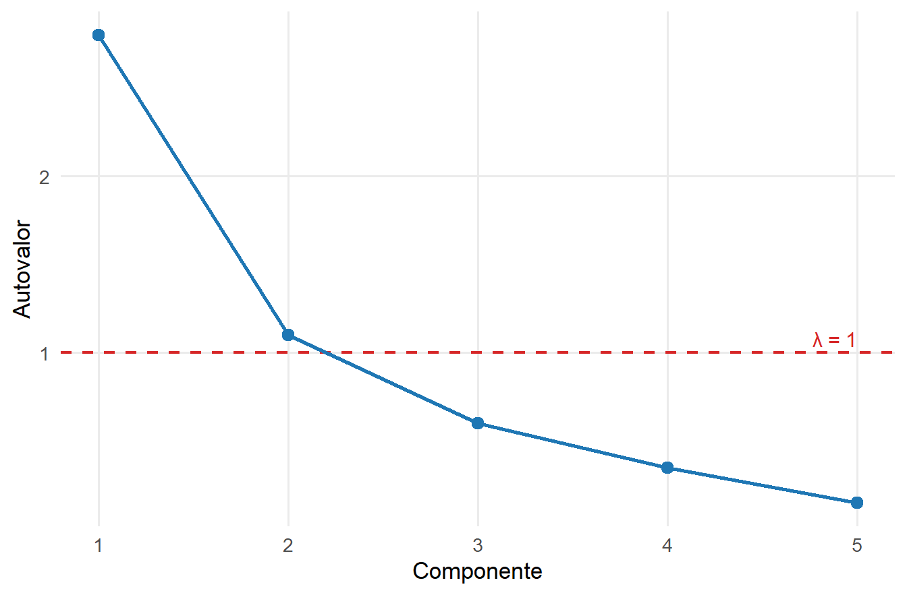

14 Formulação da Análise de Componentes Principais
A Análise de Componentes Principais (ACP) representa a variabilidade de um conjunto de variáveis por meio de combinações lineares ordenadas segundo a variância que concentram (Johnson; Wichern, 2002; Jolliffe, 2002). Seu objetivo é construir uma representação de menor dimensão que preserve, segundo esse critério, a maior parcela possível da variabilidade original.
A formulação utiliza o quociente de Rayleigh da Definição 5.7, o Teorema 5.4, a projeção ortogonal da Definição 3.19 e a SVD compacta da Definição 6.4. A construção é desenvolvida nas formulações populacional, amostral e por SVD e distingue a ACP baseada na matriz de covariâncias daquela baseada na matriz de correlações.
14.1 O problema de redução de dimensionalidade
Considere o vetor aleatório
\[ \boldsymbol{\mathsf X} = (X_1,\ldots,X_p)^\top \in \mathbb R^p, \]
com vetor de médias \(\boldsymbol{\mu}\) e matriz de covariâncias populacional \(\boldsymbol{\Sigma}\), definida na Definição 8.2.
Cada realização \(\mathbf x\in\mathbb R^p\) representa uma unidade por meio de \(p\) coordenadas. Quando várias dessas coordenadas apresentam associação linear, a variabilidade conjunta pode estar concentrada em um número menor de direções.
A Figura 14.1 ilustra essa interpretação geométrica. Uma nuvem de pontos em \(\mathbb R^2\) pode apresentar grande extensão em uma direção e pequena extensão na direção ortogonal. Duas coordenadas são necessárias para representar exatamente cada ponto, mas uma única direção pode concentrar a maior parte da dispersão da nuvem. Em dimensão \(p\), o mesmo princípio conduz à procura de um subespaço de dimensão \(k<p\) que preserve a maior variabilidade possível segundo o critério da ACP.
A ACP não seleciona diretamente \(k\) variáveis dentre as \(p\) variáveis originais. Ela constrói novas variáveis como combinações lineares das componentes de \(\boldsymbol{\mathsf X}\). Cada combinação é determinada por um vetor de coeficientes em \(\mathbb R^p\), que define uma direção no espaço das observações.
O vetor aleatório centralizado,
\[ \boldsymbol{\mathsf X}_c = \boldsymbol{\mathsf X} - \boldsymbol{\mu}, \]
tem média nula e preserva a matriz de covariâncias de \(\boldsymbol{\mathsf X}\). A centralização separa a localização da distribuição de sua estrutura de dispersão. Por isso, a formulação populacional da ACP pode ser construída diretamente a partir de \(\boldsymbol{\mathsf X}_c\) e de \(\boldsymbol{\Sigma}\).
Uma direção unitária
\[ \boldsymbol{\alpha} \in \mathbb R^p, \qquad \boldsymbol{\alpha}^\top\boldsymbol{\alpha}=1, \]
produz a combinação linear
\[ Y = \boldsymbol{\alpha}^\top \boldsymbol{\mathsf X}_c. \]
Como \(\boldsymbol{\alpha}\) possui norma unitária, \(Y\) representa a coordenada de \(\boldsymbol{\mathsf X}_c\) na direção definida por \(\boldsymbol{\alpha}\).
Pelo resultado sobre momentos de combinações lineares apresentado na Proposição 8.1,
\[ E(Y)=0 \]
e
\[ \operatorname{Var}(Y) = \boldsymbol{\alpha}^\top \boldsymbol{\Sigma} \boldsymbol{\alpha}. \]
A variância da combinação linear depende, portanto, da direção \(\boldsymbol{\alpha}\). Algumas direções podem apresentar grande dispersão, enquanto outras apresentam pequena dispersão.
A ACP ordena as direções pela variância das combinações lineares associadas. A primeira direção principal é a direção unitária que maximiza essa variância. Cada direção seguinte maximiza a variância entre as direções unitárias ortogonais às já selecionadas.
A Figura 14.1 representa uma nuvem bidimensional com variabilidade distinta segundo diferentes direções. A primeira direção principal acompanha a maior extensão da nuvem, enquanto a segunda é ortogonal à primeira e representa a variabilidade remanescente.
A maior dispersão ocorre na direção da primeira componente. A segunda componente representa a maior variabilidade possível entre as direções ortogonais à primeira. As duas direções mostram geometricamente a ordenação das componentes segundo a variância.
A redução de dimensionalidade ocorre quando apenas as primeiras \(k<p\) direções são mantidas. A parcela de variabilidade preservada depende da concentração da variância total nessas direções. Quando as primeiras componentes concentram grande parte da variância total, poucas componentes retêm uma parcela elevada da variabilidade. Quando a variância se distribui de modo mais uniforme entre as componentes, reduzir a dimensão descarta uma parcela maior da variabilidade total.
14.2 Componentes principais como combinações lineares
A \(j\)-ésima componente principal populacional tem a forma
\[ Y_j = \boldsymbol{\alpha}_j^\top \boldsymbol{\mathsf X}_c = \boldsymbol{\alpha}_j^\top \left( \boldsymbol{\mathsf X} - \boldsymbol{\mu} \right), \]
em que
\[ \boldsymbol{\alpha}_j \in \mathbb R^p \]
é o vetor de coeficientes da componente.
A formulação distingue os seguintes objetos:
- \(\boldsymbol{\alpha}_j\) define uma direção no espaço das variáveis;
- \(Y_j\) é uma variável aleatória obtida pela projeção de \(\boldsymbol{\mathsf X}_c\) nessa direção;
- a variância de \(Y_j\) quantifica a dispersão populacional representada pela direção;
- na formulação amostral, a versão estimada de \(\boldsymbol{\alpha}_j\) determina os escores das observações definidos na Definição 14.1.
Para duas combinações lineares,
\[ Y_j = \boldsymbol{\alpha}_j^\top \boldsymbol{\mathsf X}_c \]
e
\[ Y_\ell = \boldsymbol{\alpha}_\ell^\top \boldsymbol{\mathsf X}_c, \]
tem-se
\[ \operatorname{Cov}(Y_j,Y_\ell) = \boldsymbol{\alpha}_j^\top \boldsymbol{\Sigma} \boldsymbol{\alpha}_\ell. \]
Assim, a matriz \(\boldsymbol{\Sigma}\) determina simultaneamente a variância de cada combinação linear e a covariância entre diferentes combinações lineares.
A restrição de norma unitária é necessária porque a variância depende da escala do vetor de coeficientes. Para qualquer constante \(c\),
\[ \operatorname{Var} \left( c\boldsymbol{\alpha}^\top \boldsymbol{\mathsf X}_c \right) = c^2 \boldsymbol{\alpha}^\top \boldsymbol{\Sigma} \boldsymbol{\alpha}. \]
Sem controlar a norma de \(\boldsymbol{\alpha}\), a variância poderia ser aumentada apenas multiplicando os coeficientes por uma constante. A condição
\[ \boldsymbol{\alpha}^\top\boldsymbol{\alpha}=1 \]
remove esse efeito de escala e transforma o problema em uma escolha de direção.
14.3 Primeira componente principal
A primeira componente principal é a combinação linear cujo vetor de coeficientes unitário maximiza a variância.
O problema é
\[ \max_{\boldsymbol{\alpha}_1\in\mathbb R^p} \boldsymbol{\alpha}_1^\top \boldsymbol{\Sigma} \boldsymbol{\alpha}_1, \]
sujeito a
\[ \boldsymbol{\alpha}_1^\top \boldsymbol{\alpha}_1 = 1. \]
O Teorema 5.5 caracteriza os extremos do quociente definido na Definição 5.7. Aplicando esse resultado à matriz simétrica e semidefinida positiva \(\boldsymbol{\Sigma}\), o máximo é igual ao maior autovalor da matriz de covariâncias.
A variação do quociente de Rayleigh segundo a direção foi ilustrada na Figura 5.4. Na ACP, a matriz utilizada naquele problema passa a ser \(\boldsymbol{\Sigma}\), e o máximo do quociente corresponde à maior variância possível de uma combinação linear com coeficientes de norma unitária.
Se os autovalores de \(\boldsymbol{\Sigma}\) forem ordenados como
\[ \lambda_1 \geq \lambda_2 \geq \cdots \geq \lambda_p \geq 0, \]
e \(\boldsymbol{\alpha}_1\) for um autovetor unitário associado a \(\lambda_1\), então
\[ \boldsymbol{\Sigma} \boldsymbol{\alpha}_1 = \lambda_1 \boldsymbol{\alpha}_1. \]
A primeira componente principal é
\[ Y_1 = \boldsymbol{\alpha}_1^\top \boldsymbol{\mathsf X}_c, \]
e sua variância é
\[ \begin{aligned} \operatorname{Var}(Y_1) &= \boldsymbol{\alpha}_1^\top \boldsymbol{\Sigma} \boldsymbol{\alpha}_1\\ &= \boldsymbol{\alpha}_1^\top \lambda_1 \boldsymbol{\alpha}_1\\ &= \lambda_1\boldsymbol{\alpha}_1^\top\boldsymbol{\alpha}_1. \end{aligned} \]
Portanto, como \(\boldsymbol{\alpha}_1^\top\boldsymbol{\alpha}_1=1\), temos
\[ \operatorname{Var}(Y_1) = \lambda_1. \]
O maior autovalor possui uma interpretação estatística direta: ele é a maior variância que pode ser obtida por uma combinação linear das variáveis com vetor de coeficientes de norma unitária.
O autovetor correspondente define a direção em que essa variância é alcançada. A projeção de \(\boldsymbol{\mathsf X}_c\) nessa direção define a primeira componente principal.
A Seção 13.4.3 relaciona critérios de otimização e soluções espectrais. O Teorema 5.6 estabelece a relação entre a otimização de uma forma quadrática sob restrição de norma e os autovetores, a partir da condição geral do Teorema 7.6.
14.4 Componentes principais sucessivas
A primeira componente utiliza a direção unitária que maximiza a variância. As componentes seguintes são construídas sucessivamente, impondo ortogonalidade entre seus vetores de coeficientes.
A segunda componente principal é a combinação linear cujo vetor de coeficientes unitário é ortogonal a \(\boldsymbol{\alpha}_1\) e maximiza a variância sob essa restrição:
\[ \max_{\boldsymbol{\alpha}_2\in\mathbb R^p} \boldsymbol{\alpha}_2^\top \boldsymbol{\Sigma} \boldsymbol{\alpha}_2, \]
sujeito a
\[ \boldsymbol{\alpha}_2^\top \boldsymbol{\alpha}_2 = 1 \]
e
\[ \boldsymbol{\alpha}_2^\top \boldsymbol{\alpha}_1 = 0. \]
O mesmo princípio é aplicado sucessivamente. Para \(j=1,\ldots,p\), a \(j\)-ésima direção principal resolve
\[ \max_{\boldsymbol{\alpha}_j\in\mathbb R^p} \boldsymbol{\alpha}_j^\top \boldsymbol{\Sigma} \boldsymbol{\alpha}_j, \]
sujeito a
\[ \boldsymbol{\alpha}_j^\top \boldsymbol{\alpha}_j = 1 \]
e
\[ \boldsymbol{\alpha}_j^\top \boldsymbol{\alpha}_\ell = 0, \qquad \ell=1,\ldots,j-1. \]
A caracterização variacional de direções sucessivas já foi estabelecida no Teorema 5.7. Aplicando esse resultado a \(\boldsymbol{\Sigma}\), obtém-se
\[ \boldsymbol{\Sigma} \boldsymbol{\alpha}_j = \lambda_j \boldsymbol{\alpha}_j, \qquad j=1,\ldots,p. \]
Assim, pode-se escolher uma base ortonormal de autovetores da matriz de covariâncias, ordenada de acordo com os autovalores decrescentes, para definir as direções principais. Quando um autovalor possui multiplicidade maior que um, os autovetores individuais dentro do autoespaço correspondente não são únicos; essa não unicidade é desenvolvida na Seção 14.13.5.4.
A \(j\)-ésima componente principal é
\[ Y_j = \boldsymbol{\alpha}_j^\top \boldsymbol{\mathsf X}_c \]
e possui variância
\[ \operatorname{Var}(Y_j) = \lambda_j. \]
Para \(j\neq\ell\),
\[ \begin{aligned} \operatorname{Cov}(Y_j,Y_\ell) &= \boldsymbol{\alpha}_j^\top \boldsymbol{\Sigma} \boldsymbol{\alpha}_\ell\\ &= \lambda_\ell \boldsymbol{\alpha}_j^\top \boldsymbol{\alpha}_\ell\\ &= 0. \end{aligned} \]
Logo, as componentes principais são não correlacionadas:
\[ \operatorname{Cov}(Y_j,Y_\ell) = 0, \qquad j\neq\ell. \]
Duas propriedades diferentes aparecem nessa construção. Os vetores de coeficientes são ortogonais,
\[ \boldsymbol{\alpha}_j^\top \boldsymbol{\alpha}_\ell = 0, \]
enquanto as componentes principais são não correlacionadas,
\[ \operatorname{Cov}(Y_j,Y_\ell) = 0. \]
A primeira propriedade pertence à geometria dos vetores de coeficientes. A segunda pertence à estrutura probabilística das variáveis construídas. Na ACP, a equação de autovetores
\[ \boldsymbol{\Sigma}\boldsymbol{\alpha}_\ell = \lambda_\ell\boldsymbol{\alpha}_\ell \]
faz a ligação entre essas duas propriedades.
A ausência de correlação não implica independência em uma distribuição geral. Se \(\boldsymbol{\mathsf X}\) possui distribuição normal multivariada, qualquer transformação linear também é normal, conforme a Proposição 9.4. Nesse caso, o vetor das componentes principais é normal multivariado e possui matriz de covariâncias diagonal. Pela Proposição 9.6, as componentes principais são independentes.
A normalidade, portanto, acrescenta uma propriedade probabilística às componentes, mas não participa da definição da ACP.
14.5 Formulação espectral
Reunindo os vetores de coeficientes em
\[ \mathbf A = \begin{pmatrix} \boldsymbol{\alpha}_1 & \boldsymbol{\alpha}_2 & \cdots & \boldsymbol{\alpha}_p \end{pmatrix}, \]
tem-se
\[ \mathbf A^\top \mathbf A = \mathbf I_p. \]
A matriz \(\mathbf A\) é ortogonal. Pelo Teorema 5.4,
\[ \boldsymbol{\Sigma} = \mathbf A \boldsymbol{\Lambda} \mathbf A^\top, \]
em que
\[ \boldsymbol{\Lambda} = \operatorname{diag} ( \lambda_1,\ldots,\lambda_p ). \]
As componentes podem ser reunidas no vetor aleatório
\[ \boldsymbol{\mathsf Y} = \begin{pmatrix} Y_1\\ \vdots\\ Y_p \end{pmatrix} = \mathbf A^\top \boldsymbol{\mathsf X}_c. \]
Como
\[ E(\boldsymbol{\mathsf X}_c) = \mathbf0, \]
tem-se
\[ E(\boldsymbol{\mathsf Y}) = \mathbf0. \]
Pela regra de transformação da matriz de covariâncias estabelecida na Equação 8.18,
\[ \operatorname{Cov} ( \mathbf A^\top \boldsymbol{\mathsf X}_c ) = \mathbf A^\top \boldsymbol{\Sigma} \mathbf A. \]
Substituindo a decomposição espectral,
\[ \begin{aligned} \operatorname{Cov} ( \boldsymbol{\mathsf Y} ) &= \mathbf A^\top \mathbf A \boldsymbol{\Lambda} \mathbf A^\top \mathbf A\\ &= \boldsymbol{\Lambda}. \end{aligned} \]
Portanto,
\[ \operatorname{Cov} ( \boldsymbol{\mathsf Y} ) = \begin{pmatrix} \lambda_1 & 0 & \cdots & 0\\ 0 & \lambda_2 & \cdots & 0\\ \vdots & \vdots & \ddots & \vdots\\ 0 & 0 & \cdots & \lambda_p \end{pmatrix}. \]
A transformação para componentes principais diagonaliza a estrutura de covariâncias. As variáveis originais podem apresentar covariâncias diferentes de zero; no novo sistema de coordenadas, as componentes são não correlacionadas e suas variâncias aparecem na diagonal de \(\boldsymbol{\Lambda}\).
A transformação completa
\[ \boldsymbol{\mathsf X}_c \longmapsto \boldsymbol{\mathsf Y} = \mathbf A^\top \boldsymbol{\mathsf X}_c \]
não reduz a dimensão. Ela representa o mesmo vetor em uma base ortonormal diferente. Pela propriedade de preservação geométrica das transformações ortogonais estabelecida na Proposição 4.10, produtos internos, normas e distâncias são preservados quando todas as \(p\) componentes são mantidas.
A redução ocorre somente quando a transformação é seguida pela retenção das primeiras \(k<p\) coordenadas.
14.6 Variância total e proporção de variância
A variância total foi definida na Definição 8.6 por
\[ V_T = \operatorname{tr} ( \boldsymbol{\Sigma} ). \]
Pela relação entre traço e autovalores estabelecida na Proposição 5.4,
\[ \operatorname{tr} ( \boldsymbol{\Sigma} ) = \sum_{j=1}^p \lambda_j. \]
Além disso,
\[ \operatorname{Cov} ( \boldsymbol{\mathsf Y} ) = \boldsymbol{\Lambda}, \]
de modo que
\[ \operatorname{tr} \left[ \operatorname{Cov} ( \boldsymbol{\mathsf Y} ) \right] = \sum_{j=1}^p \lambda_j. \]
Assim,
\[ \sum_{j=1}^p \operatorname{Var}(Y_j) = \operatorname{tr} ( \boldsymbol{\Sigma} ). \]
A transformação completa para componentes principais preserva a variância total das variáveis originais. Como as componentes são ordenadas por autovalores decrescentes, as maiores parcelas dessa variância correspondem às primeiras componentes.
Se
\[ \operatorname{tr} ( \boldsymbol{\Sigma} ) >0, \]
a proporção da variância total associada à componente \(j\) é
\[ \pi_j = \frac{ \lambda_j }{ \sum_{\ell=1}^p \lambda_\ell }. \]
Para as primeiras \(k\) componentes, a proporção acumulada é
\[ \Pi_k = \frac{ \sum_{j=1}^k \lambda_j }{ \sum_{\ell=1}^p \lambda_\ell }. \]
A variabilidade representada pelas primeiras \(k\) direções é
\[ \sum_{j=1}^k \lambda_j, \]
enquanto a variabilidade associada às direções descartadas é
\[ \sum_{j=k+1}^p \lambda_j. \]
A decomposição pode ser resumida pela Tabela 14.1.
| Componente | Direção | Variância | Proporção da variância total |
|---|---|---|---|
| \(Y_1\) | \(\boldsymbol{\alpha}_1\) | \(\lambda_1\) | \(\lambda_1/\sum_{\ell=1}^p\lambda_\ell\) |
| \(Y_2\) | \(\boldsymbol{\alpha}_2\) | \(\lambda_2\) | \(\lambda_2/\sum_{\ell=1}^p\lambda_\ell\) |
| \(\vdots\) | \(\vdots\) | \(\vdots\) | \(\vdots\) |
| \(Y_p\) | \(\boldsymbol{\alpha}_p\) | \(\lambda_p\) | \(\lambda_p/\sum_{\ell=1}^p\lambda_\ell\) |
Exemplo 14.1 (Componentes principais de duas variáveis) Considere um vetor aleatório
\[ \boldsymbol{\mathsf X} = \begin{pmatrix} X_1\\ X_2 \end{pmatrix} \]
com matriz de covariâncias
\[ \boldsymbol{\Sigma} = \begin{pmatrix} 4 & 2\\ 2 & 4 \end{pmatrix}. \]
A decomposição espectral fornece os autovalores
\[ \lambda_1=6 \qquad \text{e} \qquad \lambda_2=2, \]
com autovetores unitários
\[ \boldsymbol{\alpha}_1 = \frac{1}{\sqrt{2}} \begin{pmatrix} 1\\ 1 \end{pmatrix} \]
e
\[ \boldsymbol{\alpha}_2 = \frac{1}{\sqrt{2}} \begin{pmatrix} 1\\ -1 \end{pmatrix}. \]
A primeira componente principal é
\[ Y_1 = \frac{ (X_1-\mu_1) + (X_2-\mu_2) }{ \sqrt{2} }, \]
com
\[ \operatorname{Var}(Y_1)=6. \]
A segunda componente é
\[ Y_2 = \frac{ (X_1-\mu_1) - (X_2-\mu_2) }{ \sqrt{2} }, \]
com
\[ \operatorname{Var}(Y_2)=2 \]
e
\[ \operatorname{Cov}(Y_1,Y_2)=0. \]
A variância total é
\[ \operatorname{tr} \left( \boldsymbol{\Sigma} \right) = 4+4 = 8, \]
que coincide com
\[ \lambda_1+\lambda_2 = 6+2 = 8. \]
A primeira componente representa \(\frac{6}{8}=75\%\) da variabilidade total, enquanto a segunda representa \(\frac{2}{8}=25\%\).
Se a representação for reduzida de duas para uma dimensão, a direção \(\boldsymbol{\alpha}_1\) preserva \(75\%\) da variabilidade e descarta \(25\%\). Nesse exemplo, a redução de dimensão possui interpretação direta: a maior parte da dispersão ocorre na direção em que as duas variáveis se deslocam conjuntamente.
A Figura 14.2 mostra, em um exemplo didático, duas leituras complementares dos autovalores. O primeiro painel apresenta a variância associada individualmente a cada componente. O segundo apresenta a proporção acumulada da variância representada pelas primeiras componentes.

A concentração da variância nos primeiros autovalores determina quanto da variabilidade total pode ser preservado com poucas componentes. Quando \(\Pi_k\) está próximo de \(1\) para um valor pequeno de \(k\), as primeiras \(k\) componentes preservam grande parcela da variância total. A proporção acumulada, entretanto, não determina sozinha quantas componentes devem ser mantidas. Outros critérios utilizados nessa decisão são apresentados na Seção 14.14.1, incluindo uma regra heurística específica para a ACP baseada na matriz de correlações.
14.7 Subespaço principal, projeção e reconstrução
Até aqui, cada componente principal foi associada a uma direção que maximiza a variância sob as restrições correspondentes. Quando apenas \(k<p\) componentes são mantidas, as direções associadas podem ser consideradas conjuntamente. Os vetores \(\boldsymbol{\alpha}_1,\ldots,\boldsymbol{\alpha}_k\) geram um subespaço principal de dimensão \(k\), no qual as realizações podem ser representadas por suas primeiras \(k\) coordenadas principais.
A redução dimensional pode ser interpretada geometricamente como a projeção de \(\boldsymbol{\mathsf X}_c\) sobre o subespaço principal. Para uma realização do vetor aleatório, essa projeção fornece uma representação utilizando apenas as primeiras \(k\) componentes principais.
Entre todos os subespaços lineares de dimensão \(k\), o subespaço principal maximiza a variância total da projeção de \(\boldsymbol{\mathsf X}_c\). Essa variância corresponde à soma dos \(k\) maiores autovalores de \(\boldsymbol{\Sigma}\), enquanto a parcela não representada corresponde à soma dos autovalores associados às direções descartadas.
As primeiras \(k\) componentes também permitem construir, no espaço original, uma aproximação de cada realização de \(\boldsymbol{\mathsf X}_c\). Quando \(k<p\), a aproximação difere da realização original por um resíduo ortogonal ao subespaço principal.
A variabilidade preservada e o erro de reconstrução descrevem a mesma escolha de subespaço sob perspectivas diferentes. O subespaço de dimensão \(k\) que preserva a maior variabilidade total é também aquele que minimiza o erro quadrático médio de reconstrução.
Quando existe separação entre o \(k\)-ésimo e o \((k+1)\)-ésimo autovalores, o subespaço principal de dimensão \(k\) é determinado de maneira única. Se houver empate nessa fronteira, diferentes subespaços podem preservar a mesma variabilidade máxima. A definição formal dessa estrutura e as condições de unicidade são apresentadas na Definição 14.2.
A formulação matricial da propriedade de máxima variabilidade é desenvolvida na Seção 14.13.1, enquanto a relação entre variabilidade preservada e erro quadrático de reconstrução é formalizada na Seção 14.13.2.
14.8 Formulação amostral
A formulação populacional define as componentes em termos de \(\boldsymbol{\Sigma}\), que geralmente é desconhecida. A aplicação da técnica utiliza uma amostra para estimar suas direções e variâncias.
Considere uma realização amostral com \(n\geq2\) observações, organizada na matriz
\[ \mathbf X \in \mathbb R^{n\times p}, \]
com média observada \(\bar{\mathbf x}\) e matriz centralizada
\[ \mathbf X_c = \mathbf X - \mathbf 1_n \bar{\mathbf x}^\top. \]
A matriz de covariâncias observada foi definida na Definição 8.11 como
\[ \mathbf S = \frac{1}{n-1} \mathbf X_c^\top \mathbf X_c. \]
A versão amostral da ACP substitui a matriz populacional \(\boldsymbol{\Sigma}\) por \(\mathbf S\).
Considere a decomposição espectral
\[ \mathbf S = \widehat{\mathbf A} \widehat{\boldsymbol{\Lambda}} \widehat{\mathbf A}^\top, \]
em que
\[ \widehat{\boldsymbol{\Lambda}} = \operatorname{diag} \left( \widehat{\lambda}_1,\ldots, \widehat{\lambda}_p \right), \]
com
\[ \widehat{\lambda}_1 \geq \cdots \geq \widehat{\lambda}_p \geq 0, \]
e
\[ \widehat{\mathbf A} = \begin{pmatrix} \widehat{\boldsymbol{\alpha}}_1 & \cdots & \widehat{\boldsymbol{\alpha}}_p \end{pmatrix}. \]
A Tabela 14.2 sintetiza a distinção entre os principais objetos populacionais e amostrais da ACP.
| Objeto | População | Amostra observada |
|---|---|---|
| Matriz de covariâncias | \(\boldsymbol{\Sigma}\) | \(\mathbf S\) |
| Direção principal \(j\) | \(\boldsymbol{\alpha}_j\) | \(\widehat{\boldsymbol{\alpha}}_j\) |
| Variância da componente \(j\) | \(\lambda_j\) | \(\widehat{\lambda}_j\) |
| Componente principal | \(Y_j=\boldsymbol{\alpha}_j^\top(\boldsymbol{\mathsf X}-\boldsymbol{\mu})\) | construída a partir da direção estimada \(\widehat{\boldsymbol{\alpha}}_j\) |
| Coordenada da observação \(i\) na componente \(j\) | \(y_{ij}=\boldsymbol{\alpha}_j^\top(\mathbf x_i-\boldsymbol{\mu})\) | escore \(\widehat y_{ij}=\widehat{\boldsymbol{\alpha}}_j^\top(\mathbf x_i-\bar{\mathbf x})\) |
A direção \(\widehat{\boldsymbol{\alpha}}_j\) é obtida a partir da amostra. Quando o autovalor populacional correspondente é simples, o autoespaço associado é unidimensional e a direção principal é determinada até mudança de sinal; nesse sentido, a direção amostral pode ser utilizada para estimar a direção populacional. Quando há multiplicidade, os autovetores individuais não são determinados de forma única, e o objeto de interesse passa a ser o autoespaço correspondente (Anderson, 2003). A distinção entre as formulações amostral e populacional é discutida na Seção 14.11.
Os escores amostrais das observações são definidos a partir das direções principais estimadas.
Definição 14.1 (Escore de uma componente principal) Considere a observação
\[ \mathbf x_i \in \mathbb R^p, \]
sua versão centralizada
\[ \mathbf x_i-\bar{\mathbf x}, \]
e uma direção principal amostral unitária
\[ \widehat{\boldsymbol{\alpha}}_j \in \mathbb R^p. \]
O escore amostral da observação \(i\) na componente principal \(j\) é sua coordenada na direção principal estimada:
\[ \widehat y_{ij} = \widehat{\boldsymbol{\alpha}}_j^\top \left( \mathbf x_i-\bar{\mathbf x} \right). \]
Para as primeiras \(k\) componentes, considere
\[ \widehat{\mathbf A}_k = \begin{pmatrix} \widehat{\boldsymbol{\alpha}}_1 & \cdots & \widehat{\boldsymbol{\alpha}}_k \end{pmatrix}. \]
Os escores das \(n\) observações nas \(k\) primeiras componentes podem ser organizados na matriz
\[ \widehat{\mathbf Y}_k = \mathbf X_c \widehat{\mathbf A}_k \in \mathbb R^{n\times k}. \]
O elemento \(\widehat y_{ij}\) de \(\widehat{\mathbf Y}_k\) é o escore da observação \(i\) na componente \(j\). Assim, \(\widehat{\mathbf Y}_k\) reúne as coordenadas das observações nas primeiras \(k\) direções principais.
Para uma observação específica \(i\), suas coordenadas nas primeiras \(k\) componentes podem ser reunidas no vetor
\[ \widehat{\mathbf y}_{i,k} = \widehat{\mathbf A}_k^\top \left( \mathbf x_i-\bar{\mathbf x} \right) = \begin{pmatrix} \widehat y_{i1}\\ \vdots\\ \widehat y_{ik} \end{pmatrix}. \]
Os elementos de \(\widehat{\boldsymbol{\alpha}}_j\) são os coeficientes da componente principal, enquanto \(\widehat y_{ij}\) é o escore amostral da observação \(i\) nessa componente. Os coeficientes definem as direções principais e os escores fornecem as coordenadas das observações nessas direções.
A matriz centralizada reconstruída a partir das primeiras \(k\) componentes pode ser escrita como
\[ \widetilde{\mathbf X}_{c,k} = \widehat{\mathbf Y}_k \widehat{\mathbf A}_k^\top. \]
Como
\[ \widehat{\mathbf Y}_k = \mathbf X_c \widehat{\mathbf A}_k, \]
segue que
\[ \widetilde{\mathbf X}_{c,k} = \mathbf X_c \widehat{\mathbf A}_k \widehat{\mathbf A}_k^\top. \]
Assim, a reconstrução amostral também é uma projeção ortogonal sobre o subespaço principal estimado.
Para retornar às unidades e à localização originais, adiciona-se novamente o vetor de médias:
\[ \widetilde{\mathbf X}_k = \widetilde{\mathbf X}_{c,k} + \mathbf 1_n \bar{\mathbf x}^\top. \]
A centralização remove a localização antes da determinação das direções principais; a reconstrução final restitui essa localização.
14.9 Formulação da ACP pela SVD
A formulação amostral pode ser obtida diretamente da matriz centralizada sem formar previamente \(\mathbf S\).
Se
\[ r = \operatorname{posto} \left( \mathbf X_c \right) >0, \]
considere a SVD compacta definida na Definição 6.4:
\[ \mathbf X_c = \mathbf U_r \mathbf D_r \mathbf V_r^\top, \]
em que
\[ \mathbf U_r \in \mathbb R^{n\times r}, \qquad \mathbf D_r \in \mathbb R^{r\times r}, \qquad \mathbf V_r \in \mathbb R^{p\times r}. \]
Os valores singulares são ordenados como
\[ d_1 \geq d_2 \geq \cdots \geq d_r > 0. \]
Como
\[ \mathbf S = \frac{1}{n-1} \mathbf X_c^\top \mathbf X_c, \]
a Proposição 6.14 relaciona a SVD da matriz centralizada à decomposição espectral da matriz de covariâncias:
\[ \mathbf S = \mathbf V_r \frac{\mathbf D_r^2}{n-1} \mathbf V_r^\top. \]
Portanto, denotando por \(\mathbf v_j\) a \(j\)-ésima coluna de \(\mathbf V_r\), para \(j=1,\ldots,r\), cada \(\mathbf v_j\) é um autovetor de \(\mathbf S\) associado a \(\widehat{\lambda}_j\) e pode ser escolhido como a direção principal amostral correspondente:
\[ \widehat{\boldsymbol{\alpha}}_j = \mathbf v_j. \]
Como \(\mathbf v_j\) e \(-\mathbf v_j\) determinam a mesma direção, a mudança de sinal não altera o eixo principal; ela apenas inverte o sinal dos escores da componente correspondente.
Assim,
\[ \widehat{\lambda}_j = \frac{d_j^2}{n-1}, \qquad j=1,\ldots,r. \]
Os vetores singulares à direita da matriz centralizada são as direções principais amostrais associadas à variabilidade positiva. O quadrado de cada valor singular, dividido por \(n-1\), é a variância observada da componente correspondente.
Se
\[ r<p, \]
as \(p-r\) componentes restantes possuem autovalor zero e, portanto, variância amostral nula. A SVD compacta não inclui uma base para esse complemento nulo, pois retém apenas os vetores singulares associados a valores singulares positivos.
A interpretação geométrica da SVD foi apresentada na Figura 6.1. Na ACP amostral, a matriz decomposta é \(\mathbf X_c\). Os vetores singulares à direita, em \(\mathbb R^p\), fornecem as direções principais no espaço em que as observações são representadas, enquanto \(\mathbf U_r\mathbf D_r\) reúne os escores das observações nessas direções.
Essa relação mostra que a decomposição espectral de \(\mathbf S\) e a SVD de \(\mathbf X_c\) não constituem duas técnicas diferentes. Para as componentes de variância positiva, elas fornecem duas formas de obter a mesma solução amostral da ACP.
Os escores também são obtidos diretamente pela SVD:
\[ \widehat{\mathbf Y}_r = \mathbf X_c \mathbf V_r = \mathbf U_r \mathbf D_r. \]
Assim, a SVD reúne os elementos da solução amostral:
- \(\mathbf V_r\) contém as \(r\) direções principais em \(\mathbb R^p\) associadas a variância amostral positiva;
- \(\widehat{\mathbf Y}_r=\mathbf U_r\mathbf D_r\) contém os escores amostrais das observações;
- \(\mathbf D_r\) contém os valores singulares \(d_j\), relacionados às variâncias das componentes por \(\widehat{\lambda}_j=d_j^2/(n-1)\).
A centralização também limita o número de componentes com variância positiva. Pela Equação 8.63,
\[ \operatorname{posto} \left( \mathbf S \right) = \operatorname{posto} \left( \mathbf X_c \right) \leq \min(p,n-1). \]
Portanto, existem no máximo
\[ \min(p,n-1) \]
componentes principais com variância amostral positiva.
Em particular, quando \(p\geq n\), a matriz \(\mathbf S\) é necessariamente singular. Essa singularidade amostral não implica que a matriz populacional \(\boldsymbol{\Sigma}\) seja singular, pois a centralização impõe \(\operatorname{posto}(\mathbf X_c)\leq n-1<p\).
14.10 ACP baseada na matriz de correlações
A formulação anterior utiliza a matriz de covariâncias. Quando as variáveis possuem escalas ou unidades de medida diferentes, pode ser definido outro problema: realizar a ACP após padronizar cada variável para variância unitária (Johnson; Wichern, 2002).
A matriz de correlações populacional \(\boldsymbol{\mathcal R}\) foi definida na Definição 8.5, sob a condição de que todas as variâncias marginais populacionais sejam positivas, e sua correspondente observada \(\mathbf R\) foi definida na Definição 8.12, sob a condição de que
\[ s_{jj}>0, \qquad j=1,\ldots,p. \]
No nível observado, defina
\[ \mathbf D_S = \operatorname{diag} \left( s_{11},\ldots,s_{pp} \right). \]
Como
\[ s_{jj}>0, \qquad j=1,\ldots,p, \]
a matriz \(\mathbf D_S\) é positiva definida e \(\mathbf D_S^{-1/2}\) existe. Assim,
\[ \mathbf R = \mathbf D_S^{-1/2} \mathbf S \mathbf D_S^{-1/2}. \]
A Equação 8.70 relaciona a matriz de correlações às colunas centralizadas e padronizadas. Para manter essa notação distinta da matriz de delineamento \(\mathbf Z\) utilizada na Definição 11.3, neste capítulo denotaremos a matriz padronizada por
\[ \mathbf X_{\mathrm{pad}} = \mathbf X_c \mathbf D_S^{-1/2}. \]
Assim,
\[ \mathbf R = \frac{1}{n-1} \mathbf X_{\mathrm{pad}}^\top \mathbf X_{\mathrm{pad}}. \]
Realizar a ACP de \(\mathbf R\) equivale, portanto, a realizar a ACP sobre as colunas centralizadas e padronizadas de \(\mathbf X\).
Se
\[ \mathbf R = \widehat{\mathbf A}_R \widehat{\boldsymbol{\Lambda}}_R \widehat{\mathbf A}_R^\top, \]
as direções principais observadas são os autovetores de \(\mathbf R\), definidos nas coordenadas padronizadas. Os autovalores
\[ \widehat{\lambda}_{R1}, \ldots, \widehat{\lambda}_{Rp} \]
representam as variâncias observadas das componentes construídas a partir dessas variáveis.
Como a diagonal de \(\mathbf R\) é formada por valores iguais a \(1\),
\[ \operatorname{tr} \left( \mathbf R \right) = p. \]
Logo,
\[ \sum_{j=1}^p \widehat{\lambda}_{Rj} = p. \]
A proporção da variância padronizada representada pela componente \(j\) é
\[ \frac{\widehat{\lambda}_{Rj}}{p}, \]
e a proporção acumulada nas primeiras \(k\) componentes é
\[ \frac{ \sum_{j=1}^k \widehat{\lambda}_{Rj} }{ p }. \]
A utilização de \(\mathbf S\) ou \(\mathbf R\) corresponde a duas formulações diferentes da ACP.
Na ACP baseada em \(\mathbf S\), o critério de máxima variância é avaliado nas escalas originais. As variâncias marginais \(s_{jj}\) entram no problema espectral com suas magnitudes observadas.
Na ACP baseada em \(\mathbf R\), cada variável é previamente padronizada para variância unitária. O problema espectral passa, portanto, a representar a variabilidade das variáveis padronizadas.
A Tabela 14.3 resume essa distinção.
| Aspecto | ACP por covariâncias | ACP por correlações |
|---|---|---|
| Matriz de entrada | \(\mathbf S\) | \(\mathbf R\) |
| Dados equivalentes | Centralizados | Centralizados e padronizados |
| Variâncias marginais | Mantidas nas unidades originais | Iguais a \(1\) |
| Variância total | \(\operatorname{tr}(\mathbf S)\) | \(p\) |
| Influência da escala | Preservada | Removida pela padronização |
| Problema resolvido | Representar a variabilidade nas escalas originais | Representar a variabilidade após igualar as escalas marginais |
A Figura 14.3 ilustra o efeito da padronização. Os dois painéis representam as mesmas observações, antes e depois da padronização marginal. A mudança das escalas altera a geometria e, consequentemente, as direções principais.

A seta vermelha representa a primeira direção principal em cada geometria. A padronização remove as diferenças de escala marginal entre as variáveis e, nesse exemplo, modifica a direção que maximiza a variância.
A escolha entre \(\mathbf S\) e \(\mathbf R\) determina se o critério de máxima variância é aplicado às variáveis em suas escalas originais ou após a padronização e, portanto, qual estrutura de variabilidade será representada pela ACP.
A padronização modifica a geometria da nuvem de dados por meio de um escalonamento diferente em cada eixo. Consequentemente, os autovetores, os autovalores, os escores e o subespaço principal podem mudar.
No Capítulo 15, a Análise Fatorial também pode ser formulada sobre uma matriz de covariâncias ou de correlações, mas seu objetivo é diferente: em vez de decompor a variabilidade total em direções principais, especifica um modelo para a estrutura de covariação entre as variáveis.
14.11 Formulação descritiva, populacional e inferencial
A ACP pode ser formulada sem hipótese de normalidade. Na formulação populacional baseada em covariâncias, basta que \(\boldsymbol{\mathsf X}\) possua momentos de segunda ordem finitos para que a matriz de covariâncias \(\boldsymbol{\Sigma}\) e suas componentes principais estejam definidas. Na formulação baseada em correlações, exige-se adicionalmente que as variâncias marginais sejam positivas, conforme a Definição 8.5.
Na formulação descritiva, a matriz de dados observada é o objeto de interesse, e autovalores, direções e escores descrevem sua estrutura de variabilidade.
Na formulação populacional, os autovalores
\[ \lambda_j \]
e os autovetores unitários
\[ \boldsymbol{\alpha}_j \]
são características da matriz populacional \(\boldsymbol{\Sigma}\). Na formulação amostral, os autovalores e autovetores de \(\mathbf S\) são denotados por
\[ \widehat{\lambda}_j \qquad\text{e}\qquad \widehat{\boldsymbol{\alpha}}_j. \] Na ACP baseada em correlações, a distinção é análoga: os objetos populacionais são determinados pela matriz \(\boldsymbol{\mathcal R}\), enquanto os correspondentes observados são obtidos de \(\mathbf R\).
Sob as condições de consistência da matriz de covariâncias amostral estabelecidas na Proposição 10.12, os autovalores, direções e subespaços amostrais podem estimar seus correspondentes populacionais, respeitadas as condições de identificação. Quando um autovalor populacional é simples, a direção principal correspondente é determinada até mudança de sinal; quando há multiplicidade, os autovetores individuais deixam de ser únicos e o objeto identificado é o autoespaço correspondente, como discutido na Seção 14.13.5.4.
A normalidade multivariada não é necessária para a formulação da ACP. Quando
\[ \boldsymbol{\mathsf X} \sim N_p \left( \boldsymbol{\mu}, \boldsymbol{\Sigma} \right), \]
a transformação ortogonal para as componentes produz
\[ \boldsymbol{\mathsf Y} = \mathbf A^\top \left( \boldsymbol{\mathsf X} - \boldsymbol{\mu} \right) \sim N_p \left( \mathbf0, \boldsymbol{\Lambda} \right). \]
Nesse caso, as componentes são independentes. Sem normalidade conjunta, a ACP garante que componentes distintas sejam não correlacionadas, mas não necessariamente independentes.
A inferência sobre autovalores, autovetores e subespaços requer hipóteses adicionais e teoria distribucional ou assintótica específica. Esses resultados não são necessários para a formulação da ACP e são retomados na Seção 14.13.6.
14.12 Limites da representação por componentes principais
A ACP resolve um problema definido de forma precisa: encontrar combinações lineares e subespaços que preservem variabilidade segundo uma matriz de covariâncias ou correlações. Os limites da técnica decorrem diretamente dessa formulação e são sintetizados na Tabela 14.4.
| Aspecto | Consequência para a ACP |
|---|---|
| Critério de importância | As componentes são ordenadas pela variância. Uma componente de pequena variância pode ser relevante para outro objetivo estatístico. |
| Estrutura representada | A redução é realizada por projeção em subespaços lineares determinados pela matriz de covariâncias ou de correlações. Quando a variabilidade não se concentra próxima de um subespaço linear de baixa dimensão, muitas componentes podem ser necessárias para representá-la. |
| Conjunto de variáveis | Inclusão, exclusão, transformação ou mudança de escala altera a matriz analisada e pode modificar toda a solução. |
| Sensibilidade da matriz de entrada | Valores extremos podem alterar variâncias, covariâncias, correlações e, consequentemente, autovalores e autovetores. |
| Redução de dimensão | Quando são descartadas direções com autovalores positivos, parte da variabilidade original deixa de ser representada. |
Quando são retidas menos dimensões do que o posto da matriz analisada, pelo menos uma direção associada a um autovalor positivo é descartada. Pela Proposição 14.2, a variabilidade não representada corresponde à soma dos autovalores associados às direções excluídas. Toda a variabilidade é preservada apenas quando os autovalores das direções descartadas são nulos.
14.13 Aprofundamentos teóricos
14.13.1 Formulação do subespaço principal e variabilidade máxima
Considere uma base ortonormal de autovetores de \(\boldsymbol{\Sigma}\),
\[ \boldsymbol{\alpha}_1,\ldots,\boldsymbol{\alpha}_p, \]
ordenada de modo que
\[ \lambda_1 \geq \cdots \geq \lambda_p. \]
Defina
\[ \mathbf A_k = \begin{pmatrix} \boldsymbol{\alpha}_1 & \cdots & \boldsymbol{\alpha}_k \end{pmatrix} \in \mathbb R^{p\times k}. \]
Como esses vetores são ortonormais,
\[ \mathbf A_k^\top \mathbf A_k = \mathbf I_k. \]
Suas colunas geram o subespaço associado às primeiras \(k\) direções dessa base.
Definição 14.2 (Subespaço principal) Seja
\[ \boldsymbol{\Sigma} \in \mathbb R^{p\times p} \]
uma matriz de covariâncias, com autovalores ordenados como
\[ \lambda_1 \geq \cdots \geq \lambda_p \geq 0, \]
e seja
\[ \boldsymbol{\alpha}_1,\ldots,\boldsymbol{\alpha}_p \]
uma base ortonormal de autovetores correspondente a essa ordenação.
Para \(1\leq k\leq p\), um subespaço principal de dimensão \(k\) é
\[ \mathcal S_k = \operatorname{span} \left\{ \boldsymbol{\alpha}_1,\ldots,\boldsymbol{\alpha}_k \right\}. \]
Se \(k<p\) e
\[ \lambda_k>\lambda_{k+1}, \]
o subespaço principal de dimensão \(k\) é único.
Se \(\lambda_k=\lambda_{k+1}\), existem diferentes subespaços principais de dimensão \(k\) que atingem a mesma variância total máxima da projeção.
A matriz de projeção ortogonal sobre um subespaço principal \(\mathcal S_k\) é
\[ \mathbf P_k = \mathbf A_k \mathbf A_k^\top. \]
Essa expressão é uma aplicação direta da projeção sobre um subespaço com base ortonormal desenvolvida na Proposição 3.14.
As coordenadas de \(\boldsymbol{\mathsf X}_c\) nesse subespaço são
\[ \boldsymbol{\mathsf Y}_k = \mathbf A_k^\top \boldsymbol{\mathsf X}_c = \begin{pmatrix} Y_1\\ \vdots\\ Y_k \end{pmatrix}. \]
Sua matriz de covariâncias é
\[ \begin{aligned} \operatorname{Cov} \left( \boldsymbol{\mathsf Y}_k \right) &= \mathbf A_k^\top \boldsymbol{\Sigma} \mathbf A_k\\ &= \operatorname{diag} \left( \lambda_1,\ldots,\lambda_k \right). \end{aligned} \]
Portanto, a variância total das coordenadas mantidas é
\[ \operatorname{tr} \left[ \operatorname{Cov} \left( \boldsymbol{\mathsf Y}_k \right) \right] = \sum_{j=1}^k \lambda_j. \]
A soma \(\sum_{j=1}^k\lambda_j\) é a variância total das primeiras \(k\) componentes. As direções \(\boldsymbol{\alpha}_1,\ldots,\boldsymbol{\alpha}_k\) geram o subespaço principal associado a essas componentes.
Considere qualquer matriz
\[ \mathbf Q = \begin{pmatrix} \mathbf q_1 & \cdots & \mathbf q_k \end{pmatrix} \in \mathbb R^{p\times k}, \]
com colunas ortonormais,
\[ \mathbf Q^\top \mathbf Q = \mathbf I_k. \]
A projeção de \(\boldsymbol{\mathsf X}_c\) sobre o subespaço gerado por \(\mathbf Q\) possui coordenadas
\[ \mathbf Q^\top \boldsymbol{\mathsf X}_c \]
e variância total
\[ \operatorname{tr} \left( \mathbf Q^\top \boldsymbol{\Sigma} \mathbf Q \right) = \sum_{j=1}^k \mathbf q_j^\top \boldsymbol{\Sigma} \mathbf q_j. \]
A expressão \(\operatorname{tr}(\mathbf Q^\top\boldsymbol{\Sigma}\mathbf Q)\) permite comparar a variância total das projeções em diferentes subespaços de dimensão \(k\).
Proposição 14.1 (Variabilidade máxima do subespaço principal) Seja
\[ \boldsymbol{\Sigma} \in \mathbb R^{p\times p} \]
uma matriz de covariâncias com autovalores
\[ \lambda_1 \geq \cdots \geq \lambda_p \geq 0. \]
Para \(1\leq k\leq p\) e qualquer matriz
\[ \mathbf Q \in \mathbb R^{p\times k} \]
com colunas ortonormais,
\[ \mathbf Q^\top \mathbf Q = \mathbf I_k, \]
tem-se
\[ \operatorname{tr} \left( \mathbf Q^\top \boldsymbol{\Sigma} \mathbf Q \right) \leq \sum_{j=1}^k \lambda_j. \]
Portanto, a maior variância total que pode ser preservada por uma projeção ortogonal em um subespaço de dimensão \(k\) é
\[ \sum_{j=1}^k \lambda_j. \]
Esse máximo é atingido por qualquer subespaço principal \(\mathcal S_k\) definido na Definição 14.2.
Se \(k<p\) e \(\lambda_k>\lambda_{k+1}\), o subespaço que maximiza a variância é único.
Se \(\lambda_k=\lambda_{k+1}\), o subespaço maximizador pode não ser único.
NotaDemonstração
Pelo Teorema 5.4,
\[ \boldsymbol{\Sigma} = \mathbf A \boldsymbol{\Lambda} \mathbf A^\top. \]
Defina
\[ \mathbf B = \mathbf A^\top \mathbf Q. \]
Como \(\mathbf A\) é ortogonal e
\[ \mathbf Q^\top \mathbf Q = \mathbf I_k, \]
tem-se
\[ \mathbf B^\top \mathbf B = \mathbf I_k. \]
Se \(b_{i\ell}\) denota o elemento da linha \(i\) e da coluna \(\ell\) de \(\mathbf B\), defina
\[ w_i = \sum_{\ell=1}^k b_{i\ell}^{\,2}. \]
Então,
\[ \begin{aligned} \operatorname{tr} \left( \mathbf Q^\top \boldsymbol{\Sigma} \mathbf Q \right) &= \operatorname{tr} \left( \mathbf B^\top \boldsymbol{\Lambda} \mathbf B \right)\\ &= \sum_{i=1}^p \lambda_i w_i. \end{aligned} \]
Como
\[ \mathbf B \mathbf B^\top \]
é um projetor ortogonal, seus elementos diagonais satisfazem
\[ 0 \leq w_i \leq 1. \]
Além disso,
\[ \begin{aligned} \sum_{i=1}^p w_i &= \operatorname{tr} \left( \mathbf B \mathbf B^\top \right)\\ &= \operatorname{tr} \left( \mathbf B^\top \mathbf B \right)\\ &= k. \end{aligned} \]
Como
\[ \lambda_1 \geq \cdots \geq \lambda_p, \]
a soma
\[ \sum_{i=1}^p \lambda_i w_i \]
é maximizada atribuindo peso total aos \(k\) maiores autovalores. Portanto,
\[ \operatorname{tr} \left( \mathbf Q^\top \boldsymbol{\Sigma} \mathbf Q \right) \leq \sum_{j=1}^k \lambda_j. \]
A igualdade é atingida quando o subespaço é gerado pelos autovetores associados aos \(k\) maiores autovalores. Se
\[ \lambda_k > \lambda_{k+1}, \]
esse subespaço é único. Quando
\[ \lambda_k = \lambda_{k+1}, \]
podem existir diferentes subespaços de dimensão \(k\) que atingem o mesmo máximo.
14.13.2 Reconstrução e erro quadrático
As primeiras \(k\) componentes fornecem as coordenadas de \(\boldsymbol{\mathsf X}_c\) no subespaço principal. A projeção no espaço original é obtida por
\[ \widetilde{\boldsymbol{\mathsf X}}_{c,k} = \mathbf A_k \boldsymbol{\mathsf Y}_k. \]
Como
\[ \boldsymbol{\mathsf Y}_k = \mathbf A_k^\top \boldsymbol{\mathsf X}_c, \]
segue que
\[ \widetilde{\boldsymbol{\mathsf X}}_{c,k} = \mathbf A_k \mathbf A_k^\top \boldsymbol{\mathsf X}_c = \mathbf P_k \boldsymbol{\mathsf X}_c. \]
O vetor \(\widetilde{\boldsymbol{\mathsf X}}_{c,k}\) é a representação de \(\boldsymbol{\mathsf X}_c\) obtida utilizando apenas as primeiras \(k\) direções principais.
A parcela não representada é
\[ \boldsymbol{\mathsf E}_k = \boldsymbol{\mathsf X}_c - \widetilde{\boldsymbol{\mathsf X}}_{c,k} = \left( \mathbf I_p-\mathbf P_k \right) \boldsymbol{\mathsf X}_c. \]
A matriz de projeção residual foi definida na Definição 3.20, e a ortogonalidade entre a projeção e o resíduo decorre da Proposição 3.17. Portanto,
\[ \left\| \boldsymbol{\mathsf X}_c \right\|^2 = \left\| \widetilde{\boldsymbol{\mathsf X}}_{c,k} \right\|^2 + \left\| \boldsymbol{\mathsf E}_k \right\|^2. \]
Tomando esperanças, a variabilidade total também se decompõe em parcela representada e parcela não representada:
\[ E \left( \left\| \boldsymbol{\mathsf X}_c \right\|^2 \right) = E \left( \left\| \widetilde{\boldsymbol{\mathsf X}}_{c,k} \right\|^2 \right) + E \left( \left\| \boldsymbol{\mathsf E}_k \right\|^2 \right). \]
A primeira parcela é
\[ E \left( \left\| \widetilde{\boldsymbol{\mathsf X}}_{c,k} \right\|^2 \right) = \sum_{j=1}^k \lambda_j, \]
enquanto, pela definição de variância total na Definição 8.6,
\[ E \left( \left\| \boldsymbol{\mathsf X}_c \right\|^2 \right) = \operatorname{tr} \left( \boldsymbol{\Sigma} \right) = \sum_{j=1}^p \lambda_j. \]
Consequentemente,
\[ E \left( \left\| \boldsymbol{\mathsf E}_k \right\|^2 \right) = \sum_{j=k+1}^p \lambda_j. \]
A variabilidade descartada pela redução de dimensão corresponde exatamente à soma dos autovalores associados às direções excluídas.
Proposição 14.2 (Variância preservada e erro de reconstrução) Seja
\[ \boldsymbol{\mathsf X} \in \mathbb R^p \]
um vetor aleatório com segundos momentos finitos, vetor de médias \(\boldsymbol{\mu}\) e matriz de covariâncias \(\boldsymbol{\Sigma}\). Defina
\[ \boldsymbol{\mathsf X}_c = \boldsymbol{\mathsf X} - \boldsymbol{\mu}. \]
Para \(1\leq k\leq p\), considere uma matriz
\[ \mathbf Q \in \mathbb R^{p\times k} \]
com colunas ortonormais,
\[ \mathbf Q^\top\mathbf Q = \mathbf I_k, \]
e a projeção ortogonal
\[ \widetilde{\boldsymbol{\mathsf X}}_{c,\mathbf Q} = \mathbf Q \mathbf Q^\top \boldsymbol{\mathsf X}_c. \]
O erro quadrático médio de reconstrução é
\[ E \left[ \left\| \boldsymbol{\mathsf X}_c - \widetilde{\boldsymbol{\mathsf X}}_{c,\mathbf Q} \right\|^2 \right] = \operatorname{tr} ( \boldsymbol{\Sigma} ) - \operatorname{tr} \left( \mathbf Q^\top \boldsymbol{\Sigma} \mathbf Q \right). \]
Consequentemente, maximizar a variância preservada,
\[ \operatorname{tr} \left( \mathbf Q^\top \boldsymbol{\Sigma} \mathbf Q \right), \]
equivale a minimizar o erro quadrático médio de reconstrução.
Para um subespaço principal de dimensão \(k\),
\[ \text{variância preservada} = \sum_{j=1}^k \lambda_j \]
e o erro mínimo é
\[ \min_{\mathbf Q^\top\mathbf Q=\mathbf I_k} E \left[ \left\| \boldsymbol{\mathsf X}_c - \mathbf Q\mathbf Q^\top \boldsymbol{\mathsf X}_c \right\|^2 \right] = \sum_{j=k+1}^p \lambda_j. \]
NotaDemonstração
Como \(\mathbf Q\mathbf Q^\top\) é um projetor ortogonal,
\[ \begin{aligned} E \left[ \left\| \boldsymbol{\mathsf X}_c - \mathbf Q\mathbf Q^\top \boldsymbol{\mathsf X}_c \right\|^2 \right] &= \operatorname{tr} \left[ \left( \mathbf I_p-\mathbf Q\mathbf Q^\top \right) \boldsymbol{\Sigma} \right]\\ &= \operatorname{tr} ( \boldsymbol{\Sigma} ) - \operatorname{tr} \left( \mathbf Q^\top \boldsymbol{\Sigma} \mathbf Q \right). \end{aligned} \]
O primeiro termo é constante em relação a \(\mathbf Q\). Portanto, minimizar o erro equivale a maximizar a variância preservada. Pela Proposição 14.1, o máximo é \(\sum_{j=1}^k\lambda_j\) e, como \(\operatorname{tr}(\boldsymbol{\Sigma})=\sum_{j=1}^p\lambda_j\), o erro mínimo é
\[ \sum_{j=k+1}^p\lambda_j. \]
A decomposição de um vetor em projeção e resíduo ortogonal foi apresentada na Figura 3.5. Na ACP, cada realização centralizada pode ser decomposta em sua projeção sobre um subespaço principal e em um resíduo ortogonal. Para \(k=1\), esse subespaço é a reta gerada pela primeira direção principal.
A Figura 14.4 representa a redução de duas para uma dimensão. Cada observação é projetada sobre a primeira direção principal. Os segmentos vermelhos representam os resíduos de reconstrução.

Os pontos azuis são as observações centralizadas, os pontos verdes são suas projeções sobre a primeira direção principal e os segmentos vermelhos representam os resíduos de reconstrução. Entre todas as retas que passam pela origem no espaço dos dados centralizados, a reta gerada pela primeira direção principal minimiza a soma dos quadrados das normas dos resíduos ortogonais. Essa mesma reta maximiza a variância dos pontos projetados.
14.13.3 Geometria da qualidade de representação
A qualidade de representação pelas componentes principais pode ser expressa pela relação entre a norma quadrática da projeção e a norma quadrática do vetor representado. Para as observações, essa projeção ocorre em \(\mathbb R^p\), sobre as direções principais. Para as variáveis, ocorre em \(\mathbb R^n\), sobre as direções definidas pelos vetores de escores. As duas construções utilizam as relações entre produto interno, ângulo, norma e projeção desenvolvidas no Módulo I.
14.13.3.1 Qualidade de representação das observações
Defina o vetor da observação centralizada por
\[ \mathbf z_i = \mathbf x_i-\bar{\mathbf x}. \]
A direção principal associada à componente \(j\) é dada pelo autovetor unitário \(\widehat{\boldsymbol{\alpha}}_j\), e o escore da observação \(i\) nessa componente é
\[ \widehat y_{ij} = \widehat{\boldsymbol{\alpha}}_j^\top \mathbf z_i. \]
Proposição 14.3 (Qualidade de representação das observações) Considere \(\mathbf z_i\neq\mathbf0\) e as direções principais ortonormais \(\widehat{\boldsymbol{\alpha}}_1,\ldots, \widehat{\boldsymbol{\alpha}}_p\).
Se \(\theta_{ij}\) é o ângulo entre \(\mathbf z_i\) e \(\widehat{\boldsymbol{\alpha}}_j\), então
\[ \cos^{2\,(\mathrm{obs})}_{ij} = \cos^2\theta_{ij} = \frac{ \widehat y_{ij}^2 }{ \|\mathbf z_i\|^2 }. \tag{14.1}\]
Para o subespaço principal amostral
\[ \widehat{\mathcal S}_k = \operatorname{span} \left\{ \widehat{\boldsymbol{\alpha}}_1, \ldots, \widehat{\boldsymbol{\alpha}}_k \right\}, \]
a qualidade de representação pelas primeiras \(k\) componentes satisfaz
\[ \cos^{2\,(\mathrm{obs})}_{i,(1:k)} = \sum_{j=1}^{k} \cos^{2\,(\mathrm{obs})}_{ij} = \frac{ \left\| \operatorname{proj}_{\widehat{\mathcal S}_k}(\mathbf z_i)\right\|^2 }{ \|\mathbf z_i\|^2 }. \tag{14.2}\]
Além disso,
\[ \cos^{2\,(\mathrm{obs})}_{i,(1:k)} = 1- \frac{ \left\| \mathbf z_i- \operatorname{proj}_{S_k}(\mathbf z_i) \right\|^2 }{ \|\mathbf z_i\|^2 }. \]
Na ACP baseada em covariâncias,
\[ \|\mathbf z_i\|^2 = \sum_{\ell=1}^{p} \widehat y_{i\ell}^2, \]
pois a transformação completa para as coordenadas principais é ortogonal. Na ACP baseada em correlações, a mesma relação é aplicada ao vetor da observação no espaço das variáveis centralizadas e padronizadas.
O numerador da Equação 14.2 é a norma quadrática da projeção da observação centralizada sobre o subespaço retido, enquanto o denominador é sua distância quadrática ao centro. Valores próximos de \(1\) correspondem a uma pequena distância quadrática entre a observação centralizada e sua projeção.
14.13.3.2 Qualidade de representação das variáveis
Considere o vetor centralizado da variável \(X_i\) e o vetor de escores da componente \(Y_j\). A qualidade de representação pode ser formulada diretamente pela correlação entre esses dois vetores.
Proposição 14.4 (Qualidade de representação das variáveis) Considere \(s_{ii}>0\) e uma componente com \(\widehat{\lambda}_j>0\). Se \(\vartheta_{ij}\) é o ângulo entre o vetor centralizado da variável \(X_i\) e o vetor de escores da componente \(Y_j\), então
\[ r_{ij} = \widehat{\operatorname{Corr}} \left( X_i,Y_j \right) = \cos\vartheta_{ij}, \]
e
\[ \cos^{2\,(\mathrm{var})}_{ij} = r_{ij}^2 = \frac{ \widehat{\lambda}_j \widehat{\alpha}_{ij}^{\,2} }{ s_{ii} }. \tag{14.3}\]
Se \(\mathbf S\) possui posto \(r\), então
\[ \sum_{j:\,\widehat{\lambda}_j>0} r_{ij}^2 = 1. \]
Para \(1\leq k\leq r\),
\[ \cos^{2\,(\mathrm{var})}_{i,(1:k)} = \sum_{j=1}^{k} r_{ij}^2. \]
Essa quantidade é a norma quadrática da projeção do vetor centralizado e normalizado da variável sobre o subespaço gerado pelos primeiros \(k\) vetores de escores normalizados.
Assim, \(\cos^{2\,(\mathrm{var})}_{i,(1:k)}\) mede a parcela da variância da variável \(i\) representada pelo subespaço gerado pelos primeiros \(k\) vetores de escores.
As duas construções utilizam a mesma relação geométrica. Para as observações, o ângulo é definido em \(\mathbb R^p\) entre o vetor centralizado e uma direção principal. Para as variáveis, o ângulo é definido em \(\mathbb R^n\) entre o vetor centralizado da variável e o vetor de escores da componente. Em ambos os casos, o \(\cos^2\) expressa uma proporção quadrática de representação.
14.13.4 Aproximação de posto reduzido
A SVD relaciona diretamente a redução de dimensionalidade ao problema de aproximação matricial.
Para
\[ 1\leq k<r, \]
mantendo apenas os \(k\) primeiros termos da SVD,
\[ \widetilde{\mathbf X}_{c,k} = \mathbf U_k \mathbf D_k \mathbf V_k^\top. \]
Pelo Teorema 6.2, \(\widetilde{\mathbf X}_{c,k}\) é uma melhor aproximação de \(\mathbf X_c\) entre todas as matrizes de posto não superior a \(k\), segundo a norma de Frobenius.
Se
\[ d_k>d_{k+1}, \]
essa melhor aproximação é única. Quando
\[ d_k=d_{k+1}, \]
existem diferentes aproximações de posto não superior a \(k\) que atingem o mesmo erro mínimo.
Além disso, pela relação entre projeção e SVD estabelecida na Proposição 6.19,
\[ \widetilde{\mathbf X}_{c,k} = \mathbf X_c \mathbf V_k \mathbf V_k^\top. \]
Como os escores associados às primeiras \(k\) direções são
\[ \widehat{\mathbf Y}_k = \mathbf X_c \mathbf V_k, \]
também se obtém
\[ \widetilde{\mathbf X}_{c,k} = \widehat{\mathbf Y}_k \mathbf V_k^\top. \]
Essas três expressões representam o mesmo objeto:
\[ \mathbf U_k \mathbf D_k \mathbf V_k^\top = \mathbf X_c \mathbf V_k \mathbf V_k^\top = \widehat{\mathbf Y}_k \mathbf V_k^\top. \]
A primeira expressão mostra a aproximação de posto reduzido; a segunda mostra a projeção sobre o subespaço principal; a terceira mostra a reconstrução a partir dos escores amostrais e das direções principais.
O erro quadrático total da aproximação é
\[ \left\| \mathbf X_c - \widetilde{\mathbf X}_{c,k} \right\|_F^2 = \sum_{j=k+1}^{r} d_j^2. \]
Como
\[ d_j^2 = (n-1) \widehat{\lambda}_j, \]
segue que
\[ \left\| \mathbf X_c - \widetilde{\mathbf X}_{c,k} \right\|_F^2 = (n-1) \sum_{j=k+1}^{r} \widehat{\lambda}_j. \]
A parcela da soma de quadrados preservada pela aproximação é
\[ \frac{ \sum_{j=1}^k d_j^2 }{ \sum_{j=1}^r d_j^2 } = \frac{ \sum_{j=1}^k \widehat{\lambda}_j }{ \sum_{j=1}^r \widehat{\lambda}_j }. \]
Essa expressão coincide com a proporção de variância observada representada pelas primeiras \(k\) componentes.
A equivalência entre as formulações pode ser resumida pela Tabela 14.5.
| Formulação | Objeto otimizado ou decomposto | Solução |
|---|---|---|
| Variância | \(\boldsymbol{\alpha}^\top\boldsymbol{\Sigma}\boldsymbol{\alpha}\) ou \(\boldsymbol{\alpha}^\top\mathbf S\boldsymbol{\alpha}\) | Autovetores associados aos maiores autovalores |
| Subespaço | Variância total da projeção em dimensão \(k\) | Subespaço gerado pelas primeiras \(k\) direções |
| Reconstrução | Erro quadrático da representação | Projeção sobre um subespaço principal |
| SVD | Matriz de dados centralizada \(\mathbf X_c\) | Vetores singulares à direita associados aos valores singulares positivos |
| Aproximação matricial | \(\|\mathbf X_c-\mathbf B\|_F\) com \(\operatorname{posto}(\mathbf B)\leq k\) | \(\mathbf U_k\mathbf D_k\mathbf V_k^\top\) |
As formulações da Tabela 14.5 descrevem a mesma solução sob três perspectivas relacionadas. Estatisticamente, a ACP maximiza a variância das combinações lineares sujeitas às restrições de normalização e ortogonalidade. Geometricamente, o subespaço principal maximiza a variância total da projeção e minimiza o erro quadrático de reconstrução. Matricialmente, a SVD truncada fornece uma aproximação de posto reduzido da matriz de dados centralizada (Eaton, 2007; Johnson; Wichern, 2002). Na formulação amostral, essas perspectivas conduzem ao mesmo subespaço principal estimado.
14.13.5 Propriedades da solução
14.13.5.1 Invariância a translações
Para qualquer vetor constante \(\mathbf c\in\mathbb R^p\),
\[ \boldsymbol{\mathsf X}^{*} = \boldsymbol{\mathsf X} + \mathbf c \]
possui a mesma matriz de covariâncias de \(\boldsymbol{\mathsf X}\):
\[ \operatorname{Cov} \left( \boldsymbol{\mathsf X}^{*} \right) = \boldsymbol{\Sigma}. \]
Consequentemente, os autovalores e as direções principais não se alteram. A ACP baseada em covariâncias é, portanto, invariante a translações. A centralização modifica a origem da representação, mas não sua estrutura de dispersão.
14.13.5.2 Dependência da escala
A ACP baseada em covariâncias não é, em geral, invariante a mudanças individuais de escala. Se
\[ \boldsymbol{\mathsf X}^{*} = \mathbf D \boldsymbol{\mathsf X}, \]
com \(\mathbf D\) diagonal e positiva, então
\[ \boldsymbol{\Sigma}^{*} = \mathbf D \boldsymbol{\Sigma} \mathbf D. \]
Os autovalores e autovetores de \(\boldsymbol{\Sigma}^{*}\) podem diferir dos de \(\boldsymbol{\Sigma}\). Portanto, mudanças de unidade podem alterar a solução da ACP por covariâncias. Essa propriedade explica a distinção entre a ACP baseada em covariâncias e a ACP baseada em correlações desenvolvida na Seção 14.10.
14.13.5.3 Indeterminação do sinal
Se
\[ \boldsymbol{\Sigma} \boldsymbol{\alpha}_j = \lambda_j \boldsymbol{\alpha}_j, \]
então
\[ \boldsymbol{\Sigma} (-\boldsymbol{\alpha}_j) = \lambda_j (-\boldsymbol{\alpha}_j). \]
Portanto, \(\boldsymbol{\alpha}_j\) e \(-\boldsymbol{\alpha}_j\) representam a mesma direção principal.
Se o sinal do vetor de coeficientes for invertido,
\[ Y_j = \boldsymbol{\alpha}_j^\top \boldsymbol{\mathsf X}_c \]
passa a ser
\[ Y_j^{*} = -Y_j. \]
Os escores também mudam de sinal, mas a variância, o subespaço gerado e a qualidade da representação permanecem inalterados.
A orientação positiva ou negativa de um eixo principal é, portanto, arbitrária.
Ao comparar resultados produzidos por diferentes programas ou decomposições numéricas, sinais opostos não caracterizam soluções distintas. A inversão do sinal da direção principal inverte também os escores correspondentes, mas preserva o mesmo eixo, a mesma variância e a mesma qualidade de representação.
A mudança de sinal não é a única situação em que as direções podem deixar de ser únicas. Quando há autovalores repetidos, a ACP identifica o autoespaço correspondente, mas não uma base única dentro dele. Além disso, quando a matriz analisada é singular, a variabilidade está restrita a um subespaço de dimensão inferior a \(p\). Essas duas situações são desenvolvidas a seguir.
14.13.5.4 Unicidade, multiplicidade e dimensão efetiva
Quando todos os autovalores são simples, cada direção principal é determinada até mudança de sinal. Autovalores repetidos e matrizes singulares exigem distinguir a unicidade das direções, a unicidade dos subespaços e a dimensão efetivamente ocupada pela variabilidade.
14.13.5.4.1 Multiplicidade de autovalores
Os conceitos de multiplicidade algébrica e geométrica foram definidos na Definição 5.5. Como \(\boldsymbol{\Sigma}\) é simétrica, o Teorema 5.4 garante uma base ortonormal em cada autoespaço.
Considere
\[ \lambda_j = \lambda_{j+1}. \]
Qualquer base ortonormal do autoespaço associado pode ser utilizada. Assim, os vetores
\[ \boldsymbol{\alpha}_j \qquad\text{e}\qquad \boldsymbol{\alpha}_{j+1} \]
não são individualmente determinados de forma única. O objeto determinado é o autoespaço associado ao autovalor repetido.
Quando um autovalor é simples, sua direção principal é determinada até mudança de sinal. Quando há multiplicidade, diferentes bases ortonormais do autoespaço produzem conjuntos diferentes de autovetores igualmente válidos. A ACP identifica, nesse caso, o autoespaço associado ao autovalor repetido, e não uma base ortonormal única dentro dele.
A não unicidade das bases de um autoespaço com multiplicidade foi ilustrada na Figura 5.2. Na ACP, a mesma propriedade explica a condição de unicidade apresentada na Definição 14.2 e na Proposição 14.1.
Se
\[ \lambda_k > \lambda_{k+1}, \]
o subespaço principal de dimensão \(k\) é único. Se
\[ \lambda_k = \lambda_{k+1}, \]
o corte ocorre dentro de um autoespaço associado a um autovalor repetido. Nesse caso, existem diferentes subespaços de dimensão \(k\) que atingem a mesma variância total máxima da projeção.
Mesmo sem igualdade exata, uma pequena separação entre autovalores adjacentes pode tornar os autovetores individuais sensíveis a pequenas perturbações da matriz analisada. Nessa situação, o subespaço gerado conjuntamente pelos autovetores associados aos autovalores próximos pode ser mais estável do que cada direção considerada isoladamente.
14.13.5.4.2 Singularidade e dimensão efetiva
A Proposição 8.3 relaciona a singularidade da matriz de covariâncias à existência de combinações lineares com variância zero.
Se
\[ \operatorname{posto} \left( \boldsymbol{\Sigma} \right) = r < p, \]
então exatamente \(r\) autovalores são positivos:
\[ \lambda_1 \geq \cdots \geq \lambda_r > 0, \]
enquanto
\[ \lambda_{r+1} = \cdots = \lambda_p = 0. \]
O vetor centralizado \(\boldsymbol{\mathsf X}_c\) pertence, com probabilidade \(1\), ao subespaço gerado pelos autovetores associados aos \(r\) autovalores positivos. Para \(j>r\), a componente \(Y_j\) possui média zero e variância zero e, portanto, \(Y_j=0\) quase certamente. Assim, a representação pelas \(r\) componentes de variância positiva preserva toda a variância populacional.
No nível amostral, a centralização implica
\[ \operatorname{posto} \left( \mathbf X_c \right) \leq n-1 \]
e, consequentemente,
\[ \operatorname{posto} \left( \mathbf S \right) \leq \min(p,n-1). \]
Quando
\[ p \geq n, \]
a matriz de covariâncias amostral é necessariamente singular, ainda que a matriz populacional não seja. Na SVD compacta de \(\mathbf X_c\), os vetores singulares à direita associados aos valores singulares positivos formam uma base ortonormal do subespaço das direções com variância amostral positiva. A formulação da ACP por SVD permanece, portanto, bem definida mesmo quando \(\mathbf S\) é singular.
14.13.6 Estimação e inferência das componentes sob normalidade
A formulação da ACP não exige normalidade multivariada. Os resultados desta seção referem-se à ACP populacional baseada na matriz de covariâncias. A hipótese normal passa a ter função específica quando os autovalores e as direções principais são tratados como parâmetros de uma população e se deseja estudar sua estimação ou sua distribuição amostral.
Considere uma amostra aleatória da distribuição normal multivariada definida na Definição 9.1,
\[ \boldsymbol{\mathsf X}_1, \ldots, \boldsymbol{\mathsf X}_n \overset{\mathrm{iid}}{\sim} N_p \left( \boldsymbol{\mu}, \boldsymbol{\Sigma} \right), \qquad \boldsymbol{\Sigma} \succ \mathbf 0. \]
Para uma amostra observada, a Proposição 10.3 fornece a estimativa de máxima verossimilhança de \(\boldsymbol{\Sigma}\) quando o máximo da verossimilhança existe. Esse máximo existe e é único quando \(\operatorname{posto}(\mathbf S)=p\); sob o modelo normal não singular, essa condição ocorre quase certamente para \(n\geq p+1\). Com a convenção amostral utilizada neste capítulo, a Equação 10.72 fornece
\[ \widehat{\boldsymbol{\Sigma}}_{\mathrm{MV,obs}} = \frac{n-1}{n} \mathbf S. \]
Considere a decomposição espectral da matriz de covariâncias amostral,
\[ \mathbf S = \widehat{\mathbf A} \widehat{\boldsymbol{\Lambda}} \widehat{\mathbf A}^{\top}, \]
em que
\[ \widehat{\boldsymbol{\Lambda}} = \operatorname{diag} \left( \widehat{\lambda}_1, \ldots, \widehat{\lambda}_p \right). \]
Como \(\widehat{\boldsymbol{\Sigma}}_{\mathrm{MV,obs}}\) é um múltiplo positivo de \(\mathbf S\),
\[ \widehat{\boldsymbol{\Sigma}}_{\mathrm{MV,obs}} = \widehat{\mathbf A} \left( \frac{n-1}{n} \widehat{\boldsymbol{\Lambda}} \right) \widehat{\mathbf A}^{\top}. \]
As duas matrizes possuem, portanto, os mesmos autovetores. Seus autovalores diferem pelo fator
\[ \frac{n-1}{n}. \]
Com a notação adotada neste capítulo, a estimativa de máxima verossimilhança do \(j\)-ésimo autovalor é
\[ \widehat{\lambda}_{j,\mathrm{MV,obs}} = \frac{n-1}{n} \widehat{\lambda}_j. \]
Nessas condições de existência e quando os autovalores populacionais são distintos, a direção \(\widehat{\boldsymbol{\alpha}}_j\), com uma convenção de sinal, e \(\widehat{\lambda}_{j,\mathrm{MV,obs}}\) são as estimativas de máxima verossimilhança da direção principal populacional e de sua variância, respectivamente (Anderson, 2003).
A diferença entre os divisores \(n\) e \(n-1\) não altera os eixos da ACP. Ela também não altera a proporção de variância associada a cada componente, pois
\[ \frac{ \widehat{\lambda}_{j,\mathrm{MV,obs}} }{ \sum_{\ell=1}^{p} \widehat{\lambda}_{\ell,\mathrm{MV,obs}} } = \frac{ \widehat{\lambda}_{j} }{ \sum_{\ell=1}^{p} \widehat{\lambda}_{\ell} }. \]
A escolha do divisor modifica a escala dos autovalores, mas preserva as direções, os escores definidos a partir dessas direções e as proporções de variância.
Para estudar as distribuições amostrais, \(\widehat{\lambda}_j\) e \(\widehat{\boldsymbol{\alpha}}_j\) passam a ser considerados como estatísticas da amostra aleatória, isto é, como estimadores dos objetos espectrais populacionais. Sob normalidade multivariada, autovalores populacionais distintos e dimensão \(p\) fixa,
\[ \sqrt{n} \left( \widehat{\lambda}_j - \lambda_j \right) \overset{d}{\longrightarrow} N \left( 0, 2\lambda_j^2 \right). \]
Para estudar uma direção individual, fixe o sinal de \(\widehat{\boldsymbol{\alpha}}_j\) de modo que
\[ \widehat{\boldsymbol{\alpha}}_j^\top \boldsymbol{\alpha}_j > 0. \]
Então,
\[ \sqrt{n} \left( \widehat{\boldsymbol{\alpha}}_j - \boldsymbol{\alpha}_j \right) \overset{d}{\longrightarrow} N_p \left( \mathbf 0, \boldsymbol{\Gamma}_j \right), \]
com
\[ \boldsymbol{\Gamma}_j = \sum_{\ell\neq j} \frac{ \lambda_j\lambda_\ell }{ \left( \lambda_j-\lambda_\ell \right)^2 } \boldsymbol{\alpha}_\ell \boldsymbol{\alpha}_\ell^\top \]
(Anderson, 2003; Johnson; Wichern, 2002).
A expressão de \(\boldsymbol{\Gamma}_j\) mostra o efeito da separação entre autovalores. Quando \(\lambda_j\) se aproxima de outro autovalor \(\lambda_\ell\), o termo \((\lambda_j-\lambda_\ell)^{-2}\) aumenta e amplia a variância assintótica do estimador da direção principal. Esse resultado formaliza a sensibilidade das direções individuais discutida na Seção 14.13.5.4.
Os resultados assintóticos acima pressupõem autovalores populacionais distintos. Quando um autovalor possui multiplicidade maior que \(1\), os autovetores individuais não são parâmetros identificados de forma única; o objeto inferencial passa a ser o autoespaço associado ao autovalor repetido, e as fórmulas anteriores para direções individuais deixam de se aplicar.
14.14 Aprofundamentos metodológicos e aplicados
14.14.1 Escolha do número de componentes
Tanto na ACP baseada em covariâncias quanto na baseada em correlações, a decomposição espectral produz \(p\) componentes, embora aquelas associadas a autovalores nulos tenham variância zero. A redução de dimensionalidade exige decidir quantas das primeiras componentes serão mantidas. Essa decisão não é determinada pela solução matemática da ACP e deve considerar o objetivo da representação, a parcela de variabilidade preservada, os tamanhos relativos dos autovalores e a interpretação das componentes (Johnson; Wichern, 2002).
Na aplicação amostral, denote por
\[ \widehat{\lambda}_1 \geq \cdots \geq \widehat{\lambda}_p \geq 0 \]
os autovalores da matriz observada utilizada na ACP. A proporção acumulada observada é
\[ \widehat{\Pi}_k = \frac{ \sum_{j=1}^k\widehat{\lambda}_j }{ \sum_{\ell=1}^p\widehat{\lambda}_\ell }. \]
Essa quantidade descreve a parcela da variabilidade observada representada pelas primeiras \(k\) componentes. Quanto mais próximo de \(1\) estiver \(\widehat{\Pi}_k\) para um valor pequeno de \(k\), maior será a parcela da variabilidade representada por poucas componentes. Não existe, entretanto, uma proporção mínima universal que determine, por si só, quantas componentes devem ser retidas.
Outra informação é fornecida pelo gráfico dos autovalores, usualmente denominado gráfico de declive (scree plot). Os autovalores são apresentados em ordem decrescente e procura-se identificar uma mudança de inclinação que separe o trecho de quedas mais acentuadas daquele em que os autovalores se tornam relativamente pequenos e semelhantes. As componentes anteriores a essa estabilização constituem candidatas à retenção.
A Figura 14.5 ilustra esse comportamento. A linha horizontal também permite comparar, no mesmo exemplo, o gráfico de declive com a referência \(\lambda=1\) utilizada na ACP baseada em correlações.

No exemplo, os cinco autovalores somam \(5\), como ocorre para uma matriz de correlações de ordem \(5\). Após a segunda componente, os autovalores são menores e as quedas entre valores sucessivos tornam-se menos acentuadas. A linha tracejada representa outro critério: apenas os dois primeiros autovalores excedem \(1\). O gráfico de declive e a comparação com \(1\) utilizam, portanto, critérios distintos, embora neste exemplo ambos destaquem as primeiras componentes.
Na ACP baseada na matriz de correlações, há ainda uma referência específica decorrente da padronização. Como
\[ \operatorname{tr} ( \mathbf R ) = p, \]
a média dos \(p\) autovalores é igual a \(1\). Nesse contexto, o critério de reter componentes com
\[ \widehat{\lambda}_{Rj}>1 \]
pode ser interpretado como a retenção de componentes cuja variância excede a variância de uma variável original padronizada. Esse critério é uma regra heurística e sua justificativa não se transfere diretamente para a ACP baseada em uma matriz de covariâncias, cujas variâncias dependem das escalas das variáveis.
A escolha de \(k\) deve considerar conjuntamente a proporção acumulada de variância, o padrão dos autovalores no gráfico de declive e a interpretação da representação obtida. Esses critérios podem ser utilizados tanto na ACP baseada em covariâncias quanto na baseada em correlações. O critério do autovalor maior que \(1\), por sua vez, possui justificativa específica para a matriz de correlações e não constitui uma condição necessária para retenção. Diferentes critérios podem sugerir dimensões distintas, e a decisão deve permanecer vinculada ao objetivo da análise (Johnson; Wichern, 2002; Jolliffe, 2002).
Os autovalores pequenos também possuem informação diagnóstica. Valores muito próximos de zero, especialmente entre as últimas componentes, podem indicar dependências lineares ou quase lineares entre as variáveis. Assim, mesmo quando essas componentes não são mantidas na representação reduzida, os autovalores correspondentes devem ser examinados quanto à possível presença dessas dependências (Johnson; Wichern, 2002).
14.14.2 Coeficientes e relação das variáveis com as componentes
Os elementos do vetor
\[ \boldsymbol{\alpha}_j = \begin{pmatrix} \alpha_{1j}\\ \vdots\\ \alpha_{pj} \end{pmatrix} \]
são os coeficientes da \(j\)-ésima componente principal. Eles definem a combinação linear
\[ Y_j = \sum_{i=1}^p \alpha_{ij} \left( X_i-\mu_i \right). \]
Esses coeficientes são as coordenadas do vetor unitário \(\boldsymbol{\alpha}_j\) que define a direção principal em \(\mathbb R^p\) associada à componente. Eles não devem ser confundidos com as correlações entre cada variável e a componente.
A relação entre esses dois objetos pode ser obtida diretamente a partir da matriz de covariâncias.
Para a variável \(X_i\),
\[ \begin{aligned} \operatorname{Cov} \left( X_i,Y_j \right) &= \operatorname{Cov} \left[ X_i, \boldsymbol{\alpha}_j^\top \left( \boldsymbol{\mathsf X} - \boldsymbol{\mu} \right) \right]\\ &= \sum_{\ell=1}^{p} \alpha_{\ell j} \operatorname{Cov} \left( X_i,X_\ell \right)\\ &= \left( \boldsymbol{\Sigma} \boldsymbol{\alpha}_j \right)_i. \end{aligned} \]
Como
\[ \boldsymbol{\Sigma} \boldsymbol{\alpha}_j = \lambda_j \boldsymbol{\alpha}_j, \]
segue que
\[ \operatorname{Cov} \left( X_i,Y_j \right) = \lambda_j \alpha_{ij}. \]
Além disso,
\[ \operatorname{Var}(Y_j) = \lambda_j \]
e
\[ \operatorname{Var}(X_i) = \sigma_{ii}. \]
Se
\[ \sigma_{ii}>0 \]
e
\[ \lambda_j>0, \]
então a correlação está definida e
\[ \operatorname{Corr} \left( X_i,Y_j \right) = \frac{ \sqrt{\lambda_j}\,\alpha_{ij} }{ \sqrt{\sigma_{ii}} }. \]
Proposição 14.5 (Correlação entre uma variável e uma componente principal) Considere a ACP populacional baseada na matriz de covariâncias \(\boldsymbol{\Sigma}\). Para uma variável \(X_i\) com
\[ \sigma_{ii}>0 \]
e uma componente principal
\[ Y_j = \boldsymbol{\alpha}_j^\top \left( \boldsymbol{\mathsf X} - \boldsymbol{\mu} \right) \]
associada a um autovalor
\[ \lambda_j>0, \]
tem-se
\[ \operatorname{Corr} \left( X_i,Y_j \right) = \frac{ \sqrt{\lambda_j}\,\alpha_{ij} }{ \sqrt{\sigma_{ii}} }. \]
Na ACP populacional baseada na matriz de correlações \(\boldsymbol{\mathcal R}\), suponha que as variâncias marginais sejam positivas, como exigido na Definição 8.5. Considere a variável padronizada \(X_{i,\mathrm{pad}}\) e uma componente
\[ Y_{Rj} \]
construída a partir do autovetor \(\boldsymbol{\alpha}_{Rj}\) associado a
\[ \lambda_{Rj}>0. \]
Como
\[ \operatorname{Var} \left( X_{i,\mathrm{pad}} \right) = 1, \]
tem-se
\[ \operatorname{Corr} \left( X_{i,\mathrm{pad}}, Y_{Rj} \right) = \sqrt{\lambda_{Rj}}\, \alpha_{R,ij}. \]
A condição \(\lambda_j>0\) é necessária porque a correlação exige variância positiva para a componente. Se
\[ \lambda_j=0, \]
então
\[ \operatorname{Var}(Y_j)=0, \]
e a correlação entre \(Y_j\) e qualquer variável não está definida.
A expressão mostra que o coeficiente \(\alpha_{ij}\) e a correlação entre \(X_i\) e \(Y_j\) representam objetos diferentes.
A diferença entre os coeficientes da componente e as correlações com as variáveis pode ser visualizada na Figura 14.6. O exemplo utiliza uma matriz de covariâncias com variâncias marginais diferentes.

Os coeficientes pertencem ao vetor unitário que define a direção principal. As correlações dependem também da variância da componente e da variância de cada variável. Por isso, as duas medidas não são intercambiáveis.
Os coeficientes são as coordenadas do vetor unitário que define a direção principal e determinam a combinação linear da componente. As correlações descrevem a associação linear bivariada de cada variável com a componente. Na ACP baseada em covariâncias, seus valores dependem também das variâncias marginais das variáveis. Assim, coeficientes e correlações possuem interpretações distintas (Johnson; Wichern, 2002).
No Capítulo 15, as cargas fatoriais pertencem ao próprio modelo de covariâncias e têm interpretação diferente dos coeficientes de uma componente principal.
Na formulação amostral baseada em \(\mathbf S\), se
\[ s_{ii}>0 \]
e
\[ \widehat{\lambda}_j>0, \]
então
\[ \widehat{\operatorname{Corr}} \left( X_i,Y_j \right) = \frac{ \sqrt{\widehat{\lambda}_j} \,\widehat \alpha_{ij} }{ \sqrt{s_{ii}} }. \]
Quando a ACP é realizada sobre \(\mathbf R\), cada variável padronizada possui variância observada igual a \(1\). Para uma componente com
\[ \widehat{\lambda}_{Rj}>0, \]
denotando por \(X_{i,\mathrm{pad}}\) a variável padronizada e por \(Y_{Rj}\) a componente correspondente,
\[ \widehat{\operatorname{Corr}} \left( X_{i,\mathrm{pad}}, Y_{Rj} \right) = \sqrt{\widehat{\lambda}_{Rj}} \,\widehat \alpha_{R,ij}. \]
14.14.3 Representação das observações e das variáveis
A representação das observações utiliza os escores das componentes. Para as variáveis, é necessário distinguir dois objetos: as coordenadas utilizadas no mapa das variáveis e as correlações entre as variáveis e as componentes, desenvolvidas na Seção 14.14.2.
14.14.3.1 Observações: coordenadas, qualidade de representação e contribuição
Para a observação \(i\), a coordenada na componente \(j\) é o próprio escore
\[ \widehat y_{ij} = \widehat{\boldsymbol{\alpha}}_j^\top \left( \mathbf x_i-\bar{\mathbf x} \right). \]
Assim, em uma representação pelas duas primeiras componentes, a observação \(i\) é localizada pelo ponto
\[ \left( \widehat y_{i1}, \widehat y_{i2} \right). \]
O escore é a coordenada da observação na direção principal. Fixada a orientação de \(\widehat{\boldsymbol{\alpha}}_j\), seu sinal indica de que lado da origem está a projeção, e seu módulo fornece a distância dessa projeção à origem ao longo do eixo.
A Proposição 14.3 estabelece a interpretação geométrica do \(\cos^2\) das observações. Pela Equação 14.1, para a componente \(j\),
\[ \cos^{2\,(\mathrm{obs})}_{ij} = \frac{ \widehat y_{ij}^2 }{ \sum_{\ell=1}^{p} \widehat y_{i\ell}^2 }. \]
Para as primeiras \(k\) componentes,
\[ \cos^{2\,(\mathrm{obs})}_{i,(1:k)} = \sum_{j=1}^{k} \cos^{2\,(\mathrm{obs})}_{ij}. \]
Valores próximos de \(1\) indicam que grande parcela da distância quadrática da observação ao centro é preservada pela projeção no subespaço retido.
Na formulação clássica adotada neste capítulo, para uma componente com \(\widehat{\lambda}_j>0\), a contribuição da observação \(i\) para a componente \(j\) é
\[ \operatorname{ctr}^{(\mathrm{obs})}_{ij} = \frac{ \widehat y_{ij}^2 }{ \sum_{h=1}^{n}\widehat y_{hj}^2 }. \tag{14.4}\]
Portanto,
\[ \sum_{i=1}^{n} \operatorname{ctr}^{(\mathrm{obs})}_{ij} = 1. \]
Na convenção amostral utilizada neste capítulo,
\[ \sum_{h=1}^{n} \widehat y_{hj}^2 = (n-1)\widehat{\lambda}_j, \]
e
\[ \operatorname{ctr}^{(\mathrm{obs})}_{ij} = \frac{ \widehat y_{ij}^2 }{ (n-1)\widehat{\lambda}_j }. \]
Quanto maior \(\operatorname{ctr}^{(\mathrm{obs})}_{ij}\), maior a parcela da soma de quadrados dos escores da componente \(j\) correspondente à observação \(i\).
O \(\cos^2\) e a contribuição utilizam o mesmo escore quadrático, mas normalizações diferentes. O \(\cos^2\) o divide pela distância quadrática total da observação ao centro; a contribuição o divide pela soma de quadrados dos escores de todas as observações na componente.
14.14.3.2 Variáveis: coordenadas, qualidade de representação e contribuição
A Seção 14.14.2 mostrou que os coeficientes que definem uma direção principal e as correlações das variáveis com as componentes são objetos distintos. A representação das variáveis também exige distinguir essas correlações das coordenadas associadas aos eixos principais.
Considere primeiro a ACP baseada em \(\mathbf S\). Para a variável \(i\) e a componente \(j\), a coordenada adotada neste capítulo é
\[ c_{ij} = \sqrt{\widehat{\lambda}_j}\, \widehat{\alpha}_{ij}. \]
Pela relação desenvolvida na Seção 14.14.2,
\[ r_{ij} = \widehat{\operatorname{Corr}} \left( X_i,Y_j \right) = \frac{ c_{ij} }{ \sqrt{s_{ii}} }, \]
quando \(s_{ii}>0\).
A coordenada \(c_{ij}\) e a correlação \(r_{ij}\) coincidem apenas quando a variável considerada possui variância unitária. Esse é o caso da ACP aplicada às variáveis padronizadas.
Na ACP baseada em \(\mathbf R\),
\[ c_{R,ij} = \sqrt{\widehat{\lambda}_{Rj}}\, \widehat{\alpha}_{R,ij} \]
e, como cada variável padronizada possui variância igual a \(1\),
\[ c_{R,ij} = r_{R,ij}. \] A Proposição 14.4 estabelece a interpretação geométrica do \(\cos^2\) das variáveis. Pela Equação 14.3, para uma componente com \(\widehat{\lambda}_j>0\),
\[ \cos^{2\,(\mathrm{var})}_{ij} = r_{ij}^2. \]
Para as primeiras \(k\) componentes,
\[ \cos^{2\,(\mathrm{var})}_{i,(1:k)} = \sum_{j=1}^{k} r_{ij}^2. \]
Valores próximos de \(1\) indicam que grande parcela da variância da variável é representada pelo subespaço gerado pelos primeiros \(k\) vetores de escores.
Para uma componente com \(\widehat{\lambda}_j>0\), a contribuição da variável \(i\) para a componente \(j\) pode ser escrita como
\[ \operatorname{ctr}^{(\mathrm{var})}_{ij} = \frac{ c_{ij}^2 }{ \widehat{\lambda}_j }. \tag{14.5}\]
Como
\[ c_{ij} = \sqrt{\widehat{\lambda}_j}\, \widehat{\alpha}_{ij}, \]
segue que
\[ \operatorname{ctr}^{(\mathrm{var})}_{ij} = \widehat{\alpha}_{ij}^{\,2}. \]
Portanto,
\[ \sum_{i=1}^{p} \operatorname{ctr}^{(\mathrm{var})}_{ij} = 1. \]
Na ACP baseada em correlações, para uma componente com \(\widehat{\lambda}_{Rj}>0\),
\[ c_{R,ij} = r_{R,ij}, \]
e a contribuição também pode ser escrita como
\[ \operatorname{ctr}^{(\mathrm{var})}_{ij} = \frac{ r_{R,ij}^2 }{ \widehat{\lambda}_{Rj} }. \]
A coordenada localiza a variável na geometria associada às componentes. O \(\cos^2\) mede sua qualidade de representação. A contribuição mede sua participação na construção da componente.
14.14.3.3 Duas representações complementares
A interpretação gráfica da ACP distingue o mapa das observações do mapa das variáveis. Os \(\cos^2\) desenvolvidos na Seção 14.13.3 quantificam a qualidade de representação desses elementos nas dimensões retidas.
No mapa das observações, os pontos são posicionados pelos escores nas componentes retidas. A distância euclidiana entre dois pontos é a distância entre as projeções das observações no subespaço representado. Na ACP baseada em covariâncias, essa geometria é determinada pelos dados centralizados em suas escalas originais; na ACP baseada em correlações, pelos dados centralizados e padronizados. Quando nem todas as componentes são mantidas, as distâncias no mapa não reproduzem necessariamente as distâncias euclidianas no espaço completo. A qualidade da representação de cada observação é avaliada pelos respectivos \(\cos^2\).
No mapa das variáveis, duas representações devem ser distinguidas. As coordenadas \(c_{ij}\) descrevem a posição das variáveis na geometria associada às componentes. As correlações \(r_{ij}\) expressam a associação linear entre cada variável e cada componente na escala comum \([-1,1]\).
Quando o mapa é construído pelas correlações, os pontos
\[ \left( r_{i1}, r_{i2} \right) \]
estão contidos no círculo unitário, pois
\[ r_{i1}^2+r_{i2}^2 \leq 1. \]
Na ACP baseada em correlações, as coordenadas \(c_{R,ij}\) coincidem com as correlações \(r_{R,ij}\). Nesse caso, o mapa das variáveis e o círculo de correlações utilizam as mesmas coordenadas.
No círculo de correlações, o módulo de \(r_{ij}\) quantifica a intensidade da associação linear da variável \(i\) com a componente \(j\), enquanto \(r_{i1}^2+r_{i2}^2\) quantifica a parcela de sua variância representada pelo plano das duas primeiras componentes. Pontos próximos da circunferência possuem \(\cos^2\) acumulado próximo de \(1\) nesse plano.
Coordenada, \(\cos^2\) e contribuição descrevem aspectos distintos da representação:
- a coordenada determina a posição da observação ou da variável na representação;
- o \(\cos^2\) quantifica a parcela de sua norma quadrática ou de sua variância representada pela dimensão ou pelo subespaço;
- a contribuição quantifica a participação relativa na componente: para observações, pela parcela da soma de quadrados dos escores; para variáveis, pela parcela associada ao coeficiente quadrático \(\widehat{\alpha}_{ij}^2\).
Os autovalores quantificam a variância das componentes, enquanto coordenadas, \(\cos^2\) e contribuições descrevem, respectivamente, a posição, a qualidade de representação e a participação relativa das observações e das variáveis.
14.14.4 Elementos ativos e suplementares na ACP
Na formulação amostral, as observações e as variáveis utilizadas na construção da solução são denominadas ativas. As observações ativas participam do cálculo das médias, dos desvios-padrão quando há padronização e da matriz de covariâncias ou de correlações; as variáveis ativas determinam quais coordenadas são consideradas nessa matriz. A partir desses elementos são obtidos os autovalores, as direções principais e os escores das observações ativas.
Elementos que não participam dessa construção são denominados suplementares. Depois que a solução é determinada, observações suplementares podem ser projetadas nas direções principais, variáveis quantitativas suplementares podem ser relacionadas às componentes por correlações e categorias suplementares podem ser posicionadas pelos baricentros dos escores.
Assim, os elementos suplementares são descritos em relação a uma solução já construída e não participam da determinação dos autovalores nem das direções principais.
14.14.4.1 Observações suplementares
Considere uma nova observação
\[ \mathbf x_* \in \mathbb R^p \]
que não tenha participado da construção da solução. Mantendo a média e as direções principais estimadas a partir dos elementos ativos, seu escore na componente \(j\) é
\[ \widehat y_{*j} = \widehat{\boldsymbol{\alpha}}_j^\top \left( \mathbf x_*-\bar{\mathbf x} \right). \tag{14.6}\]
A observação é, portanto, projetada sobre direções já determinadas. Ela recebe escores nas componentes da solução, mas não modifica
\[ \widehat{\lambda}_j \qquad\text{nem}\qquad \widehat{\boldsymbol{\alpha}}_j. \]
Quando a ACP é realizada sobre variáveis padronizadas, a observação suplementar deve ser centralizada e padronizada utilizando as médias e os desvios-padrão empregados na construção da solução, sem recalculá-los após sua inclusão.
Essa construção utiliza a projeção sobre um subespaço com base ortonormal desenvolvida na Proposição 3.14. Uma vez definida a base do espaço principal, outros vetores podem ser representados nessa base sem que ela precise ser novamente estimada.
14.14.4.2 Variáveis quantitativas suplementares
Uma variável quantitativa suplementar não participa da matriz utilizada para determinar as componentes principais. Depois que os escores das observações ativas são obtidos, sua relação com cada componente pode ser avaliada pela correlação
\[ r_{*j} = \widehat{\operatorname{Corr}} \left( X_*, Y_j \right), \]
desde que a variável suplementar apresente variância observada positiva.
O valor \(r_{*j}\) descreve a associação linear da variável suplementar com a componente \(j\). Seu quadrado,
\[ r_{*j}^2, \]
mede a qualidade de representação da variável suplementar nessa dimensão.
Quanto maior \(|r_{*j}|\), maior a intensidade da associação linear da variável suplementar com a componente \(j\). Essa correlação possui função descritiva e não atribui à variável suplementar participação na determinação da direção principal, que permanece definida pela matriz construída a partir das observações e variáveis ativas.
14.14.4.3 Variáveis categóricas suplementares
Uma variável categórica não integra diretamente a matriz de covariâncias ou de correlações da ACP clássica desenvolvida neste capítulo. Depois que as componentes são obtidas, suas categorias podem ser relacionadas à posição das observações no espaço principal.
Considere uma categoria \(g\) formada pelo conjunto \(I_g\) de \(n_g\) observações ativas. Com pesos iguais, sua coordenada na componente \(j\) é o baricentro dos escores das observações pertencentes à categoria,
\[ \bar y_{gj} = \frac{1}{n_g} \sum_{i\in I_g} \widehat y_{ij}. \]
Em uma representação pelas duas primeiras componentes, a categoria é localizada pelo ponto
\[ \left( \bar y_{g1}, \bar y_{g2} \right). \]
Essa posição é determinada pelos escores médios das observações pertencentes à categoria nas dimensões representadas. Diferenças entre os baricentros descrevem diferenças entre esses escores médios; constituem um resumo descritivo e não, por si sós, um teste de diferenças entre categorias.
As coordenadas das categorias são calculadas depois da construção dos eixos. Elas não alteram os autovalores, os autovetores ou os escores das observações ativas.
Em todos os casos, os elementos suplementares são relacionados à solução após sua construção e não participam da determinação dos eixos principais.
14.14.5 Correspondência com a implementação utilizada
Nas atividades computacionais, a ACP será realizada pelo módulo MEDA (Leblay et al., 2026) do jamovi (The jamovi project, 2026). O MEDA utiliza procedimentos do pacote FactoMineR (Lê; Josse; Husson, 2008). As opções e os resultados apresentados pela implementação correspondem a objetos estatísticos distintos desenvolvidos no capítulo.
| Elemento da implementação | Correspondência estatística | Desenvolvimento no capítulo |
|---|---|---|
| Scale to unit variance | escolha entre a ACP sobre variáveis padronizadas e a ACP que preserva as escalas observadas | Seção 14.10 |
| Variáveis quantitativas ativas | variáveis que participam da determinação dos eixos principais | Seção 14.14.4 |
| Variáveis quantitativas suplementares | variáveis relacionadas às componentes depois da construção dos eixos | Seção 14.14.4 |
| Variáveis categóricas suplementares | categorias representadas pelos baricentros dos escores das observações correspondentes | Seção 14.14.4 |
| Coordenadas das observações | escores \(\widehat y_{ij}\) das componentes principais | Seção 14.14.3 |
| Coordenadas das variáveis | coordenadas \(c_{ij}\) associadas aos eixos principais | Seção 14.14.3 |
| \(\cos^2\) | qualidade de representação das observações ou das variáveis | Seção 14.13.3 e Seção 14.14.3 |
| Contribuições | participação relativa das observações na soma de quadrados da componente e das variáveis na direção principal | Seção 14.14.3 |
A opção Scale to unit variance controla a padronização das variáveis quantitativas ativas. Quando ela está ativada, a solução corresponde à ACP baseada na matriz de correlações desenvolvida na Seção 14.10. Quando está desativada, as diferenças de escala entre as variáveis permanecem na análise e as direções principais coincidem com as obtidas pela ACP baseada em covariâncias; a diferença de convenção na escala dos autovalores é descrita a seguir.
Há uma diferença de convenção na ACP sem padronização. Neste capítulo,
\[ \mathbf S = \frac{1}{n-1} \mathbf X_c^\top \mathbf X_c. \]
Com pesos iguais para as observações, o FactoMineR utiliza a matriz
\[ \mathbf S_{\mathrm{FM}} = \frac{1}{n} \mathbf X_c^\top \mathbf X_c. \]
Assim,
\[ \mathbf S_{\mathrm{FM}} = \frac{n-1}{n} \mathbf S \]
e seus autovalores satisfazem
\[ \widehat{\lambda}_{j,\mathrm{FM}} = \frac{n-1}{n} \widehat{\lambda}_j. \]
Essa mudança de escala não altera os autovetores, os escores das observações nem as proporções de variância. As coordenadas das variáveis que dependem de \(\sqrt{\widehat{\lambda}_j}\) são multiplicadas por \(\sqrt{(n-1)/n}\), enquanto correlações, \(\cos^2\) e contribuições permanecem invariantes. Na ACP padronizada, a normalização conduz à mesma matriz de correlações \(\mathbf R\) definida neste capítulo.
As contribuições são expressas neste capítulo como proporções que somam \(1\) em cada componente; a implementação apresenta as mesmas quantidades em porcentagem, multiplicadas por \(100\).
Para as variáveis ativas, as coordenadas \(c_{ij}\) e as correlações \(r_{ij}\) com as componentes são objetos distintos na ACP sem padronização. Quando Scale to unit variance está ativada, esses dois objetos coincidem, conforme discutido na Seção 14.14.3.
A padronização para variância unitária é a configuração inicial do MEDA, mas essa configuração não constitui um critério estatístico para escolher entre a ACP baseada em correlações e a ACP baseada em covariâncias. A escolha depende das escalas das variáveis e do objetivo da análise.
14.15 Síntese
A Análise de Componentes Principais constrói componentes como combinações lineares de \(\boldsymbol{\mathsf X}_c\), ordenadas segundo suas variâncias. Os vetores de coeficientes dessas combinações definem as direções principais, que podem ser escolhidas ortonormais. Para o vetor centralizado \(\boldsymbol{\mathsf X}_c\),
\[ Y_j = \boldsymbol{\alpha}_j^\top \boldsymbol{\mathsf X}_c, \qquad \operatorname{Var}(Y_j) = \lambda_j, \]
em que \(\boldsymbol{\alpha}_j\) é um autovetor unitário de \(\boldsymbol{\Sigma}\) associado ao autovalor \(\lambda_j\). Como as direções principais são definidas por autovetores de \(\boldsymbol{\Sigma}\) escolhidos ortonormais, a matriz de covariâncias das componentes é diagonal e componentes principais distintas são não correlacionadas.
A redução de dimensionalidade retém as primeiras \(k\) componentes e representa as realizações no subespaço gerado pelas direções principais correspondentes. Entre todos os subespaços de dimensão \(k\), esse subespaço maximiza a variância total da projeção e minimiza o erro quadrático de reconstrução. Na formulação amostral, para as componentes de variância positiva, os vetores singulares à direita de \(\mathbf X_c\) geram os mesmos subespaços que os autovetores correspondentes de \(\mathbf S\), e os escores são obtidos por \(\mathbf U_k\mathbf D_k\).
A matriz utilizada define a geometria da análise. A ACP baseada em \(\mathbf S\) preserva as escalas e variâncias originais. A ACP baseada em \(\mathbf R\) utiliza variáveis padronizadas e atribui variância unitária a cada uma delas.
A escolha do número de componentes não é determinada por um único critério. Autovalores, proporção acumulada de variância, gráfico de declive e interpretação das componentes fornecem informações complementares para decidir a dimensão da representação.
Os escores fornecem as coordenadas das observações nas componentes principais. Para as variáveis, os coeficientes definem as direções, as coordenadas determinam sua posição na representação e as correlações quantificam sua associação linear com as componentes. Os \(\cos^2\) quantificam a qualidade de representação. As contribuições das observações correspondem à participação relativa na soma de quadrados dos escores de uma componente, enquanto as contribuições das variáveis correspondem, na convenção adotada, aos coeficientes quadráticos \(\widehat{\alpha}_{ij}^2\). Os elementos suplementares são relacionados à solução depois da determinação dos eixos e não participam dessa determinação.
A formulação descritiva parte da matriz de dados observada e não exige normalidade multivariada. A formulação populacional baseada em covariâncias requer momentos de segunda ordem finitos; a formulação baseada em correlações requer também variâncias marginais positivas. Sob normalidade multivariada, autovalores e direções principais podem ser tratados por métodos de estimação e inferência; resultados para direções individuais requerem condições adicionais, como autovalores populacionais distintos.
Em contraste, no Capítulo 15, a Análise Fatorial procura representar a estrutura comum de covariâncias por meio de fatores latentes e separa essa parcela da variabilidade específica de cada variável.